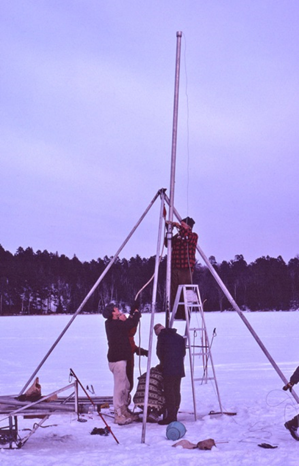
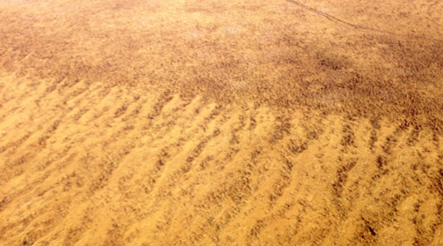
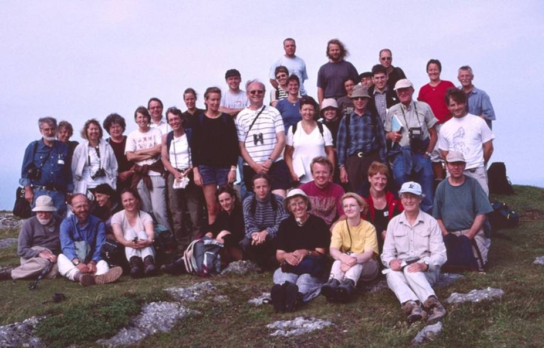

Herbert E Wright, Jr – a biography
by John Birks
Introduction
Herb Wright (1917–2015) was one of the world’s most distinguished Quaternary scientists. He was a great scientific polymath and an intellectual giant within the broad field of Quaternary research. He had an immense impact on many aspects of Quaternary science during the second half of the 20th century. He contributed greatly to our understanding of landscape history and environmental changes over the past 100,000 years in many parts of the world. He started with arid-region geomorphology and landscape evolution, which naturally shifted when he moved to Minnesota to glacial geology and climate history. The study of these topics led him to the study of vegetation development and environmental history and allowed him to define the timing and mechanisms of climate-driven vegetational shifts in North America during the last 18,000 years and to recognise the role of natural fire in the dynamics of northern forests. He was able to apply effectively these insights on fire history to wilderness conservation and landscape management. His endless curiosity expanded to cover many other aspects of palaeoecology including lake development and palaeolimnology, and the history and development of the vast patterned peatlands of the Northern Hemisphere. His work was concentrated in Minnesota, with its complex glacial, landscape, vegetational, and climatic history, but his broader vision led him to be involved in a major synthesis of global palaeoclimatology. Beyond Minnesota and the Great Lakes region, Herb studied a wide range of research questions elsewhere in North America, and in the Near East, Europe, Asia, Latin America, and Antarctica. His multidisciplinary approach and great powers of synthesis uncovered how the Earth’s landscapes and biota have been transformed at a wide range of spatial and temporal scales in the past through the interactions between climate, flora, fauna, landform, and human activity.
Herb, who died peacefully at his home in St Paul, Minnesota after a long illness on 12 November 2015, was born in Malden, Massachusetts on 13 September 1917. He studied at Harvard University, including his PhD on arid-region geomorphology and landscape evolution in New Mexico under the supervision of Kirk Bryan Sr. He completed his PhD thesis in 1943 whilst also training to be a B-17 Flying Fortress pilot during 1942–43. He flew many missions over Europe in 1944 and early 1945. In late 1945 he was appointed a teaching assistant at Brown University in Providence, Rhode Island and moved in 1947 to be an assistant professor in the Department of Geology, University of Minnesota. He remained there for over 60 years and continually broadened his research interests and experiences and areas of study. He was appointed full professor in geology in 1959 and Regents’ Professor of Geology, Ecology, and Botany in 1974. The Limnological Research Center (LRC) was founded in 1959 and Herb was its director from 1963–90. The LRC quickly became the leading North American centre and power-house for palaeoecological, palaeolimnological, and neolimnological research. He always realised the importance of international communication and collaboration so a key policy of the LRC was to attract a large number of overseas visitors who provided inspiration, allowed a cross-fertilisation of ideas, and introduced multidisciplinary approaches to the LRC and its students. Between 1963 and 1990, visitors had come from at least 18 countries. During his long academic career, Herb supervised over 75 graduate and doctoral students, mentored countless other students, post-doctoral researchers, and research visitors from around the world, and influenced the careers of a very large number of students, friends, and colleagues. Very many are now leading scholars and making outstanding contributions to many different aspects of Quaternary research. Between 1943 and 2014, Herb published over 200 papers or monographs, and edited 15 influential books and six Special Issues of journals on a very wide range of topics within Quaternary science.
The major underlying theme of Herb’s scientific activities was the reconstruction of late-Quaternary landscape history at various spatial and temporal scales to explain the functioning of our present landscapes and ecosystems and how they might respond to climate change and human impact in the future. Thus he synthesised the vegetational and climatic history of Minnesota and adjacent states using a range of geological and palaeoecological approaches. With Miron ‘Bud’ Heinselman and others, Herb unravelled the key role of natural fire in the dynamics of coniferous forests. This led to Bud, Herb, and others to mount a successful campaign to save an extensive area of unlogged old-growth forest in northernmost Minnesota. Herb made major contributions to the understanding of the complex glacial history of the Great Lakes region and the control of the landscape on the development of peatlands and the origin of their spectacular surface patterns in the extensive peatlands of northern Minnesota and also in Labrador, Ireland, central Sweden, and northern Norway. He co-directed the multi-institutional Co-operative Holocene Mapping Project (COHMAP) with John Kutzbach, Tom Webb, Pat Bartlein, and others in the late 1970s and early 1980s. In COHMAP, past climates were simulated by a global circulation model at 3000 year intervals for the last 18,000 years. Most importantly, attempts were made to validate the model simulation results against actual palaeoclimatic data. COHMAP resulted in a major paradigm shift in Holocene climate research.
Another of Herb’s major contributions was the development of geo-archaeology starting in Lebanon and proceeding to Iraq, Iran, Kurdistan, and Turkey, and subsequently to Greece, Labrador, Peru, and Bolivia to study how the landscape and environment influenced the development of human societies and land-use practices.
Herb was one of the first American scientists to realise that understanding environmental history required continuous sedimentary archives extending back in time: the most informative being lake sediments. A major but often unrealised contribution was Herb’s perfection of techniques for coring lake-sediments. This contribution has enabled the vast majority of palaeolimnological and palaeoecological research today. He had a passion for fieldwork and sediment coring, seeming to enjoy it most under difficult or near impossible winter conditions in Minnesota and the Dakotas, in wilderness areas such as Labrador, Alaska, and the Yukon, and in physically demanding regions such as the Peruvian and Bolivian Andes and the Siberian Altai. He loved fieldwork and he was coring lake sediments in the Pirin Mountains of Bulgaria just before his 90th birthday.
Herb’s distinguished career was recognised by many honours and awards including honorary doctorates from Trinity College Dublin, Lund University, and University of Minnesota, membership of the National Academy of Sciences, a Distinguished Career Award from the American Quaternary Association, and a Lifetime Achievement Award from the International Paleolimnological Association.
Major contributions and achievements – a summary
This biography attempts to describe and document the major contributions of Herb to Quaternary science and to outline his early life and education, career, family life, and retirement, as well as his influence on many students, colleagues, and friends. Before discussing Herb’s early life and his wide-ranging academic activities over 70 years, I summarise what to me are Herb’s ten most important contributions to Quaternary science. I discuss them in greater detail as separate topics within the large section on his ‘Scientific research activities and their impact’, before I conclude with a discussion of Herb’s lasting legacies and some personal comments.
Herb had many research interests and made major contributions to a wide range of topics. His scientific contributions include the following.
- Developing geo-archaeological studies in the Near East (Lebanon, Iraq, Iran, Turkey, Kurdistan) and presenting important and challenging hypotheses linking early domestication and cultural events with climate change. In contrast to the long-standing hypothesis of environmental determinism in cultural history presented by Gordon Childe in the 1920s, Wright’s hypotheses were based on the results of detailed palaeoecological studies which he had initiated and which showed that climate in south-western Asia changed from dry to moist in the earliest Holocene. Childe had assumed the opposite, namely a moist-temperate period in the glacial period had changed to the semi-arid climate of today, thereby forcing animals, plants, and humans to congregate at oases where domestication had begun. Herb maintained a keen and active interest in multidisciplinary archaeological projects and worked on such projects later in, for example, southern Greece, Labrador, Peru, and Bolivia. These geo-archaeological studies ranging over 50 years of Herb’ s scientific career showed how the landscape and environment influenced, in different ways and in different settings, human development and societies.
- Deciphering the complex glacial history and resulting geomorphology of Minnesota and adjacent states with their multiple ice-lakes, glacial surges, tunnel valleys, pro-glacial lakes and their shorelines, and ice-advances and ice-retreats. Herb also worked on many aspects of glacial geomorphology and landscape evolution elsewhere in areas as diverse as Alaska, the Yukon Territory, the Rockies, New Mexico, the high Andes of Peru and Bolivia, northern Greenland, Siberian Altai, the Near East, and Antarctica.
- Synthesising the late-Quaternary vegetation and climate history of Minnesota and adjacent states primarily based on the results of detailed pollen-analytical and plant-macrofossil studies. He also facilitated innovative studies on the vegetational and environmental history of Labrador, the Yukon Territory, Alaska, the south-eastern United States, New Mexico, Mexico, Ecuador, Peru, Bolivia, Switzerland, Czech Republic, Bulgaria, Iran, and Siberian Altai. He had a great passion for fieldwork and sediment coring (see 8 below).
- Creating a centre (the LRC) for North American palaeolimnology and neolimnology where critical questions on recent and prehistoric impact on lake ecosystems, past lake-levels, hydrological changes, patterns of lake ontogeny in recently deglaciated areas, and long-term lake development were studied intensively.
- Co-directing the multi-institutional COHMAP research consortium with John Kutzbach, Tom Webb, Pat Bartlein, and others. The basic idea was to simulate past climates at 18, 15, 12, 9, 6, 3, and 0 ka and to compare the climate-model simulations with available palaeoclimatic data. COHMAP led to a major paradigm shift in Holocene climate research and Herb was a key contributor to this.
- Understanding the origin and maintenance of the spectacular surface patterns of northern Minnesotan peatlands, and subsequently, of patterned peatlands in Labrador, Ireland, central Sweden, and northern Norway.
- Recognising with Bud Heinselman the essential role of natural fires in determining the composition, structure, and dynamics of northern Minnesotan coniferous forests. Herb and colleagues pioneered the detailed reconstruction of Holocene fire histories from charcoal fragments preserved in annually laminated lake sediments. This early work showed the importance of fire in coniferous forest dynamics and had major implications for forest management and fire-suppression policies. Herb’s synthesis of landscape development, forest fires, and management was one of the earliest studies where palaeoecological results were used to propose management and conservation policies. Bud, Herb, and others campaigned tirelessly in the 1970s to save an extensive area of virgin, unlogged old-growth forest in northernmost Minnesota as a wilderness area where snow-mobiles, outboard motors, and logging would be prohibited. They succeeded in 1978 when President Jimmy Carter signed the relevant legislative bill.
- Perfecting field-craft and lake-sediment coring. Herb was as much at home in the field, even under difficult or sometimes atrocious conditions as he was in his departmental office or in his St. Paul home. He had a passion for coring sediments in lakes and he perfected coring from open-water using a variety of boats, canoes, home-made rafts, fallen logs, and even truck-tyre inner-tubes as platforms to core from. He continually improved lightweight piston corers and drive rods. Fieldwork with Herb could often turn into an adventure, or a serious adventure, or even a struggle to survive! He claimed never to remember any of these adventures, misadventures, or struggles! He loved all types of fieldwork, particularly in wild and remote areas.
- Writing clearly and concisely and editing manuscripts were two of Herb’s many skills and contributions to science. His publications are models of simple, concise, and elegant scientific writing. Herb commented after his 80th birthday that he must enjoy editing and thought that perhaps it went back to his days editing his high-school newsletter in the early 1930s.
- Networking and international collaboration were an important part of Herb’s scientific modus operandi. Soon after World War II, Herb travelled widely in Europe and by the time he established the Pollen Laboratory in Minnesota in 1958, he had visited all the main European pollen laboratories and met the leading palynologists of the time. The LRC was a hotspot of international activity and collaboration in the 1960s–1980s thanks to Herb’s networking and collaborative skills. After his retirement, he continued to be a regular visitor to Europe to visit laboratories and friends, explore new landscapes, attend field excursions, and, of course, to help core sediments in lakes and mires in, for example, Norway, Ireland, Switzerland, the Czech Republic, Bulgaria, Georgia, Siberian Altai, and on the Azores and Madeira, as well as in Kenya, Bolivia, Peru, and Alaska.
Biography
Early life and education
Herbert (‘Herb’) Edgar Wright Jr was born on 13 September 1917 in Malden, Massachusetts. His father, Herbert Edgar Wright Sr was an osteopath who died during the ‘Spanish flu’ pandemic of 1919–20. His mother, Annie Mabel Richardson (1878–1964), was a nurse. Herb had an elder sister, Helena (1915–2010). As a child Herb spent much time in the western suburbs of Boston with his favourite uncles and their families. He attended high school in Malden, where he enjoyed playing basketball and football. A high-school essay written on 14 November 1932 by the 15-year-old Herb on “Thoughts and Achievements” in College English 3 survives and provides details about Herb’s early life, and his thoughts, achievements, and ambitions. Herb’s father had been taught the clarinet by his brother-in-law and Herb Sr travelled around the eastern USA with a jazz band. He subsequently took up the new subject of osteopathy and he practiced his clarinet in the day and went to night-school in the evenings. Herb Jr records that he was a most active boy when young and had to be strapped into bed until he went to sleep. He started school when he was six and Herb wrote “I did not dislike school. I always took an interest in and tried to get all I could out of it”. He supplemented his meagre pocket money by cutting grass, selling papers, delivering and selling doughnuts made by his mother to some of his paper-round customers on Saturday mornings, and singing in local choirs. By 1932 Herb had saved enough to pay for a year at college. He was clearly a meticulous notekeeper, as he kept records of his finances, books read, movies, plays, lectures, etc. attended, marks received at school, and so on. In the concluding outlook in his essay, Herb wrote “If finances and other difficulties permit, I will continue to college, one of the best, I hope, and study as exclusively as I can in some subject that interests me. … Whenever I hear anyone speak about history from the fall of Rome to 1700, I am immediately interested. Why, I don’t know. Whenever anyone speaks of the creation of the world, or of ancient man before the first signs of cultivation, or of psychology, I am enthusiastic. Maybe I shall be a doctor or a college professor, for these two professions interest me a little, but whatever my occupation may be, it will take plenty of study and hard work. I am determined to go through college, though I haven’t planned on any certain one yet, although Harvard, Dartmouth, and West Point interest me. The selection, however, is not for me to decide now. I must wait until I finish my present course before I look too far ahead.”
The 15-year-old Herb’s ambition of studying at Harvard came to fruition as he graduated with a BA magna cum laude from Harvard College in 1939 and received his MA and PhD in geology from Harvard University in 1941 and 1943, respectively. His other ambition of becoming a college professor materialised in 1947. Herb started out as a Harvard biology student, with some thoughts of reading history or biology, following the footsteps of his sister who majored in biology at Radcliffe College, but after a trip to all the national parks west of the Mississippi River with their spectacular landscape, Herb’s interests shifted to geology, in particular arid-region geomorphology, landscapes, and their patterns and evolution (Herb Wright, pers. comm. 1971). He was greatly encouraged by Kirk Bryan Sr, a person who also greatly influenced the interests and careers of many students and colleagues. During his years at Harvard, Herb was Austin Teaching Fellow, laboratory assistant to Kirtley Mather, and field instructor for Kirk Bryan Sr (Schwartz 1972). He also helped to pay for his Harvard education by cutting grass, by driving tourists around downtown Boston, by working as a parking-lot attendant, by waiting at the student lunch club, and by other jobs at 50c an hour.
When America entered World War II, Herb enlisted in 1942 as an air-cadet and became a B-17 Flying Fortress bomber pilot in the Army Air Corps. He finished writing his PhD thesis in boot camp in Nashville and whilst he was being trained to fly B-17 bombers at Geiger Field and Ephrata Air Bases, Washington, Rapid City Army Air Base, South Dakota, and Pyote, west Texas. He made two tours of combat duty based in Britain and flew 48 missions in 1944–1945 including runs over Germany during D-Day, over Berlin after D-Day, and at the Battle of the Bulge (Wright, unpublished note ‘1944 England’). He served as a pilot, command pilot, and group operations officer, reaching the rank of major (Schwartz 1972). He belonged to the 95th Bombardment Group stationed at RAF Horham near Bury St Edmonds in East Anglia. The 95th Group was the only Eighth Air Force group awarded three Distinguished Unit Citations and had the highest total claims of enemy aircraft (425) destroyed (Morris & Hawkins 2012). He was awarded the Air Medal six times, the Distinguished Flying Cross twice, and the Croix de Guerre from Charles de Gaulle. During his spare time at Horham, Herb visited by bicycle several classical Quaternary sites in the area including the famous interglacial site at Hoxne where he found Palaeolithic implements and Diss Mere, a lake that he was to revisit to core in 1979.
When he was on leave and away from Horham for a few days, Herb often visited London with fellow airmen. There he attended concerts (e.g. Bach Mass in B Minor, Elgar The Dream of Gerontius), ballet, and plays; bought vinyl LPs of Beethoven’s piano concertos; ate and drank whisky and brandy at the Savoy Hotel; was fascinated by the soap-box orators at Hyde Park Corner; and spent exciting days in the library of the Geology Museum in Kensington where he lunched with its director. He also visited Oxford and Cambridge, learnt to play golf and bridge, and enjoyed English and French cuisine. His Quaternary field excursions, concerts in London, and visits to the Geology Museum are not listed in the official ‘Instructions for American Servicemen in Britain’ (War and Navy Departments 1942) which provides advice on the peculiarities of the “British, their country, and their ways” in an attempt to “lesson the culture shock for those embarking on their first trip to Great Britain and, for the most part, abroad”. Herb did not seem to suffer from any cultural shock whilst stationed in England!
Herb considered his most exciting war-time moment came after his flight training when he was given a four-engine B-17 Flying Fortress nicknamed Lizzie to fly from Goose Bay in Labrador to England with a crew of 10 in the winter of early 1944. One engine had low oil pressure before taking off but Herb was allowed to set off across the Atlantic. Another engine failed halfway across the Atlantic. The plane began to lose power and altitude towards the Irish coast and Herb was forced to make an emergency landing at St Angelo airfield on the shores of Lough Erne near Enniskillen, Co. Fermanagh. He landed too fast owing to ice that had accumulated on the wings and ran off the runway, coming to an abrupt halt with Lizzie’s right landing-gear intact but buried in mud and peat up to the top of the wheel and the left landing-gear buried up to the hub. The ball target, nose glass, and fixtures were damaged and three of Lizzie’s propellers were bent. Fortunately no-one was hurt but Herb confessed that he “felt a bit stupid after landing” (transcript of Wright’s crash report). He remarked later that to his amazement he simply signed a chit and was given a new plane (Paul Glazer, pers. comm. 2015). He also said that his landing at St Angelo may have been his first walk on a bog, many of which he visited professionally in years to come (George Jacobson, pers. comm. 2016).
In May 1945, Herb flew important aid-drops to The Netherlands. Sacks containing potatoes, flour, chocolate, etc. were dropped into marked fields bordered by cheering local residents. One young Dutch boy from near Arnhem collected some of the sacks – his name was C Roel Janssen (1930–2015) (Janssen, pers. comm. 2014). Janssen became a palynologist with a major research group in Utrecht, and worked with Herb in Minnesota 1962-1964 and later on short visits up to 1990.
After his European tours flying B-17s, Herb returned to the USA and volunteered to fly in the Pacific theatre of war. He was sent to Sioux Falls Army Airfield, South Dakota for training with the new B-29s. In his spare time he borrowed a bicycle and explored the interesting Dakotan landscape. The 95th Bombardment Group was inactivated on 28 August 1945. Herb commented many years later that his favourite times flying were when he just had to put in hours in the air (for his pilot certification) because on those flights he could enjoy the clouds and the geomorphology of the landscapes beneath (George Jacobson, pers. comm. 2016).
Herb’s first scientific paper (Wright 1943) was on the petrology, formation, and age of Cerro Colorado, an isolated non-basaltic volcano in central New Mexico. This was his first introduction to the geology and geomorphology of semi-arid landscapes. He continued in such landscapes for his PhD, which was on the Tertiary and Quaternary geology and geomorphology of the arid Lower Rio Puerco valley in western New Mexico (Wright 1946). It was during this work that he developed his strong and ever-lasting fascination with landscape history rather than only bedrock geology and geomorphological processes. He quickly realised, however, that landscape history could not be quantified without a chronology, and he puzzled about how to obtain such a chronology. He rapidly recognised the potential of lakes as they contained organic material that might be suitable not only for palaeoecological and palaeoenvironmental investigations such as pollen analysis but also, perhaps in the future, for some form of relative or absolute dating. Herb continued this fascination and interest in the study of lakes and their sediments for over 60 years.
His PhD advisor and influential mentor, Kirk Bryan Sr (1888–1950), made a major impact on Herb’s career and research interests (Wright, unpublished note ‘Wengen’). Herb acknowledges Kirk Bryan Sr (Wright 1946) for planning and guiding his Lower Rio Puerco study and gracefully suggests that “many of the ideas herewith presented were inspired by discussions with him”. Bryan was interested in many aspects of environmental history, especially climate change (Whittlesey 1951). His graduate students translated current papers by German scientists who were reconstructing ice-age conditions in Europe. In his early career as a faculty member at the University of Minnesota, Herb continued this tradition and distributed to colleagues translations of papers by, for example, Hans Poser (1907-1998), Julius Büdel (1903-1983) (Wright 1959; Wright & Alt 1959), and Carl Troll (1899-1975) (Wright 1958), mainly about the periglacial record in central Europe and periglacial processes globally. After visiting Europe in the late 1940s and meeting leading Quaternary scientists and geomorphologists in Germany, Switzerland, and Austria, Herb published a large review paper on the Late Pleistocene climate of Europe (Wright 1961a). Kirk Bryan was also interested in European vegetational and climatic history and late-glacial chronology and in the linkage between archaeology and geology. Both interests were keenly followed by Herb during his own research career. Another Kirk Bryan tradition that Herb followed was to hold weekly seminars in his home. For over 50 years, Herb held Wednesday-evening seminars on Quaternary glacial geology, palaeoclimatology, palaeoecology, palaeolimnology, and neolimnology in the Wright home in St Anthony Park, St Paul McAndrews 2016). The seminars continue to this day in the same house, now hosted by Vania Stefanova.
When Herb was appointed Assistant Professor of Geology at the University of Minnesota in September 1947, he had already developed interests in lakes and their sediments, in geological applications to archaeology through his 1947 study near Beirut (see below), in landscape history, and in European vegetational and climatic history; interests that he would develop extensively during his long and distinguished academic career.
Professional career
After his war service in the Army Air Corps, Herb Wright was appointed in 1945 to be a teaching instructor at Brown College (now Brown University) (Providence, Rhode Island), then a liberal-arts college. He moved to the University of Minnesota in September 1947 as an Assistant Professor in the then Department of Geology (in 1962 it became the Department of Geology and Geophysics and is now the Department of Earth Sciences). The search procedure for this faculty position in 1947 consisted of a short informal interview with George A Thiel (1892-1979), the Chair of the Department. Thiel was attending a Geological Society of America meeting in New York. He telephoned Herb and asked him to take the train from Providence to New York so that they could meet. The ‘interview’ was in the lobby of Thiel’s hotel. At the end of their meeting, Thiel told Herb that he was hired – quite a contrast to today’s procedures of search committees, evaluation boards, trial lectures, counting publication citations, h-indices, etc. Once installed in Pillsbury Hall where the University of Minnesota’s Department of Geology is housed, Herb remained there for over 60 years. He was promoted to Associate Professor of Geology in 1951 and to Professor of Geology in 1959. He was also appointed Professor of Botany in 1965 and in Ecology in 1970 within the newly-formed Department of Ecology and Evolution and Behavioral Biology (now Department of Ecology, Evolution, and Behavior) at the University of Minnesota. He was named Regents’ Professor of Geology, Ecology, and Botany in 1974 and became Regents’ Professor Emeritus in 1988.
Herb had a large teaching load (Schwartz 1972) with courses or seminar series on structural geology, stratigraphy, and glaciology, as well as on his research interests such as physical geology and geomorphology, glacial geology, Quaternary environmental change, and landscape and climate history. He lectured to thousands and advised more than 75 graduate and PhD students during his 60+ years at the University of Minnesota. The lessons that Herb taught extended far beyond the lecture-hall or the field – they were lessons in modesty, conciseness, kindness, loyalty, devotion to sharing and understanding, and survival (see Memories of HEWright by Bob Baker).
After his PhD work in New Mexico and his visits to Europe and the Near East in the early 1950s, Herb became interested in the potential of pollen analysis as a tool for reconstructing environmental change and landscape history. Thanks to a grant from the Hill Family Foundation in 1956, he was able to establish in 1958 a pollen laboratory in Minnesota. Herb invited experienced European pollen analysts and palaeoecologists to help in the development of the laboratory and to help in advising students. Magnus Fries (Sweden) was the first to come in 1958, followed by Saskia Jelgersma (The Netherlands: 1959–60), William A Watts (Ireland: 1961 and later), Willem van Zeist (The Netherlands: 1960–61), Roel Janssen (The Netherlands: 1962–64 and later), Maj-Britt Florin (Sweden: 1964–65), Krystyna Wasylikova (Poland: 1964–65), Kazimierz Wasylik (Poland: 1965), Elizabeth Haworth (UK: 1967), Johanna Grüger (Germany: 1968–69), Eberhard Grüger (Germany: 1968–69), Hilary Birks (UK: 1970), H John B Birks (UK: 1970–71 and later), and, in later years, Jan Janssens (Belgium and Canada: 1980–89), Richard W Battarbee (UK: 1981–82), Svante Björck (Sweden: 1981–82 and later), and Ingemar Renberg (Sweden: 1991). With a separate grant from the Hill Family Foundation, the Limnological Research Center (LRC) was established in 1959. The pollen laboratory was incorporated within the LRC in 1963 when Herb became the LRC Director. The LRC rapidly developed expertise not only in palaeoecology but also in palaeolimnology and neolimnology with faculty members such as Joe Shapiro, Robert (‘Bob’) O Megard, Alan Brook, and Eville Gorham. The LRC attracted many foreign visitors for short (1–3 month) visits from Canada, UK, Norway, Sweden, Germany, Czech Republic, Slovenia, France, Spain, and Japan. Its multi-national flavour was supplemented by graduate students and post-doctoral fellows from Canada, UK, Ireland, Norway, Sweden, Finland, Germany, The Netherlands, Belgium, France, Spain, China, and Japan. The LRC under Herb’s leadership became a major international centre for palaeoecological, palaeolimnological, and neolimnological research. Herb retired from being LRC director in 1990.
Throughout his professional career, Herb conducted major and demanding research projects not only in Minnesota but also across North America from Florida via New Mexico to Alaska, as well as in the Yukon, Labrador, and Mexico. Abroad he worked in Norway, Sweden, Russia, Siberia, UK, Ireland, Switzerland, Azores, Madeira, Greece, Bulgaria, Turkey, Georgia, Lebanon, Iran, Iraq, Kenya, Peru, Bolivia, and Antarctica. He made extended academic visits to Russia, China, Australia, and several European countries. He published more than 200 international scientific papers, edited 21 books or Special Issues of journals, and supervised at least 36 PhD dissertations and 38 MSc or MA theses in the University of Minnesota’s Departments of Geology, Ecology, and Botany, and its Center for Ancient Studies. He was involved as an invaluable advisor for countless more graduate students and post-doctoral visitors. Many of his students and post-doctoral visitors are now leading scholars and are making outstanding contributions to many different aspects of Quaternary research as well as to teaching, supervision, and mentoring.
Retirement
Herb Wright formally ‘retired’ from his Regents’ Professorship in 1988 at the mandatory (at that time) age of 70 and from being director of the Limnological Research Center in 1990. He continued to teach and advise graduate students for many years thereafter. In his retirement he participated in numerous sediment-coring expeditions to remote parts of the globe, including the high Peruvian Andes, Glacier Bay in Alaska, the Azores, the Bulgarian Pirin mountains, the Caucasus of Georgia, and the Siberian Altai. He was visiting Hilary and John Birks in Bergen in December 1988 when he decided to stay an extra day or two in Norway before returning to the USA. Fortunately, he was able to change his reservation that was for PanAm flight 103 on 21 December 1988, the flight that was blown up over Lockerbie in Scotland, to a later flight with a different carrier. Until about 2010, Herb was actively engaged in science with writing and editing. He travelled to Guadalajara in Mexico to receive on 16 December 2009 his Lifetime Achievement Award from the International Paleolimnology Association (Wright 2010). His last publication (Ammann et al. 2014) formed part of a festschrift volume in honour of Hilary Birks who worked with Herb on various projects since her post-doctoral year in the LRC in 1970.
Family life
Herb Wright met his wife-to-be Rhea Jane Hahn (1921–1988) in church choirs at Harvard University and Radcliffe College in the early 1940s. They married on 27 June 1943 at the Moody Field Post Chapel, Valdosta, Georgia. Herb was then an air-cadet in the Army Air Corps and Rhea was a nursing student at Yale College of Nursing. They spent their honeymoon at Sea Island, Georgia followed by a short residence at Sebring, Florida. They had six sons (Richard (1944–), Peter (1948–1955), John (1950–), Rex (1953–1988), Andy (1955–), and Jeffrey (1959–)).
Herb and his family enjoyed many cross-country skiing trips, sometimes with their neighbours in St Anthony Park, St Paul. His sons often accompanied Herb on field expeditions to core in, for example, Iran, Iraq, Kurdistan, Labrador, the Yukon, Minnesota, New Mexico, Peru, and Bolivia. For many summers, Herb and Rhea rented a rustic cabin with no electricity on an island in Lake Minnetonka just west of the Twin Cities. Several families, some of whom were faculty at the University of Minnesota, would often have supper together in the summer evenings and enjoy the idyllic tranquillity of Lake Minnetonka.
Herb greatly loved classical music (see below) and he regularly attended concerts of the Minnesota Orchestra (formerly known as the Minneapolis Symphony Orchestra), the St Paul Chamber Orchestra, and Music in the Park. Besides the music of Schubert and Brahms, he was very attracted to Faure’s Requiem. Herb once told Brigitta Ammann (pers. comm. 2015) that he would like Faure’s Requiem at his funeral but said “just too bad that I will not be able to hear it”. At his Memorial Service on 5 December 2015, the music was by Bach, Handel, Marcello, and Beethoven. He avidly read liberal newspapers and regularly listened to Minnesota public radio. Rhea also loved music and she played piano, flute, and recorder and taught piano in the 1950s–1960s. Rhea and Herb hosted local recorder groups in their home.
Herb and Rhea were an important part of the ‘Hythe Street Regulars’ for over 50 years and the many visitors to Herb’s LRC quickly experienced the wonderful camaraderie of the ‘Regulars’ from Kemper Kirkpatrick, Kim and Ann Munholland, John and Judy Howe, Dick and Finette Magnuson, Bobbi and Bob Megard, and all their respective children. They made visitors from far afield feel very much at home, even in the midst of a fierce Twin Cities January night. Herb and Rhea became ‘second parents’ to many young children of their friends and colleagues.
Herb died peacefully at his St Anthony Park home in St Paul on 12 November 2015 after a long illness. Rhea predeceased him on 21 January 1988 as did sons Peter and Rex. His sons Richard (‘Dick’), John, Andy, and Jeffrey survive him along with his grandchildren Patrick, Christopher, Thierry, and Theora, and great-grandson Adrian, as do daughter-in-law Sylvie (widow of Rex), Vibeke, Christa, and Maria, partners of Dick, John, and Jeffrey, respectively, and Marianne Wright. For the last 14 years of his life, Herb was lovingly cared for by his dear friend and colleague Ivanka (‘Vania’) Stefanova.
Classical music
Classical music was a very important part of Herb’s life (Wright, unpublished letter 27 May 2001). He described himself as an “addict of classical music”. He met his wife-to-be Rhea in choirs at Harvard and Radcliffe Colleges. Herb had sung in two local church choirs as a schoolboy – one because the choir-master organised a basketball team and the other because a small salary was paid for participating. By his own admission, Herb was not a good singer but he learnt to read music and carry a tune. In his first year at Harvard College, he took a course on music appreciation and leant all the proper forms and styles. He spent long hours in the listening rooms trying to memorise themes and dissect the musical structure. The professor was so deeply involved in the beginnings of music in Medieval times that the course never reached the 19th century! Herb’s fascination with music tempted him to volunteer as an usher at the monthly concerts of the Boston Symphony Orchestra in the College auditorium. Herb also enlisted in the Harvard Glee Club along with the legendary Leonard Bernstein. Herb also joined the university chorus and he sang in the chorus for a recording of Beethoven’s Symphony no.9 (‘Choral Symphony’) by the Boston Symphony Orchestra. After moving to Minnesota, Herb again joined the university chorus and again sang the Choral Symphony but this time with the Minneapolis Symphony Orchestra (now the Minnesota Orchestra). He regularly attended its concerts over 60 years with season tickets for seats near the front on the right-hand side, exactly where he was an usher back in the early 1930s in Boston. He usually bought four or six season tickets and sold or gave them to friends or colleagues. He also keenly supported the St Paul Chamber Orchestra and was a friend of the Music in the Park series, now renamed The Schubert Club who dedicated their concert on 25 September 2016 to Herb, twelve days after his birthday. Herb Herb enjoyed listening to radio programmes that included interviews with soloists or directors commenting about the music they would be performing in the Twin Cities. He greatly enjoyed the articulate, informal, and talented English musician and scholar Christopher Hogwood talking as Artistic Director of the St Paul Chamber Orchestra to explain the connections between pieces that he would direct at the next concert. One such example of ingenious Hogwood programming that Herb greatly enjoyed was Tippett’s Fantasia Concertante on a Theme of Corelli, Holst’s St Paul’s Suite Op.29, number 2, and A Fugal Concerto Op.40, number 2, Corelli’s Concerto Grosso in F Op.6, number 2 and Trio Sonata Opus 3, number 4, and Bach’s Fugue in B minor on a Theme of Corelli (BWV579).
Herb’s musical tastes focused on the late 18th and the 19th centuries with the music of Mozart, Beethoven, Schubert, Schumann, Brahms, Berlioz, Tchaikovsky, and to a lesser extent Haydn. He was fascinated by Schubert’s Eight (‘Unfinished’) Symphony. His wife’s tastes, as a recorder player, were more in the late 17th and early 18th centuries of the Baroque period. I once bought her and Herb an LP of the Academy of Ancient Music’s superb and stylistically unique rendering (1981) of Pachelbel’s Canon and Gigue directed by Christopher Hogwood. Rhea loved it so much that she almost wore the LP out. It was played at the wedding of their son Rex to Sylvie.
Scientific research activities and their impact
During his long and distinguished scientific career, Herb Wright had many research interests and made major contributions to at least ten topics. The overarching aim of Herb’s activities was to reconstruct the late-Quaternary history of individual areas and ultimately of the world and to use these reconstructions to improve our understanding of the present and the future (Shane & Cushing 1991a; Wright 1973a). To Herb the term history had a broad meaning to include geological, geomorphological, climatic, biotic, and anthropological change over a wide range of temporal and spatial scales (Shane & Cushing 1991a). Herb (Wright 1973a) discussed Quaternary science and public service in modern society with all its environmental problems. Herb concluded “many aspects of the projects in which one might become involved are interesting scientific problems themselves, apart from their application to an environmental crisis. A combination of intellectual stimulation and emotional satisfaction is hard to beat. I recommend it as a modest ingredient in an academic diet.” Clearly for Herb it was a very important diet that sustained him as a Quaternary scientist and active environmentalist for 70 years.
Chapters in Quaternary Landscapes (Shane & Cushing 1991b) review six of the ten topics discussed below – origins of food production and archaeology (Watson 1991), Quaternary glacial history and stratigraphy (Mangerud 1991), peat growth (Clymo 1991), palaeoecology (Ritchie 1991), palaeolimnology (Battarbee 1991), and climate and vegetational change (Kutzbach & Webb 1991). These papers were presented at a symposium in Minneapolis in May 1988 to honour Herb on the occasion of his formal retirement as Regents’ Professor. The additional four topics discussed below concern Herb’s contributions and legacies to fire history, conservation, and landscape management; field-craft and sediment coring; writing and editing; and scientific networking and collaboration.
1. Geological archaeology
Before being hired by the University of Minnesota, Herb Wright was a teaching instructor at Brown University (Providence, Rhode Island) (1945–1947) where he worked on glacial geology. During the summer of 1947, he went to coastal Lebanon to make a sedimentary and geomorphological study of the Ksar Akil Upper Palaeolithic rock shelter near Beirut (Wright 1951), as part of a Boston College–Fordham University excavation at the suggestion of Kirk Bryan Sr and Hallam Movius (1907-1987). The rock shelter is now recognised as an important site that encompasses Mousterian and Upper Palaeolithic industries in a 23-metre thick deposit. Herb wrote “I shudder to think that my field area was in West Beirut itself, where cemented coastal sand dunes and intercalated soils and marine shell beds suggested a story of environmental change” (Wright, unpublished note ‘Wengen’). Initially Herb travelled each day by tram (street-car) from his lodgings at the American University of Beirut. He later lived with Jesuit archaeologists at the archaeological site. They were looked after by an Armenian cook who maintained an excellent field camp. Herb borrowed an old car and explored the marine terraces and other geomorphological features of the Lebanese coast and became fascinated by the environmental history and landscapes of the Near East (Wright 1996; Wright, unpublished note ‘Wengen’).
The archaeological contacts that resulted from Herb’s 1947 Lebanon expedition led to him being engaged by the Oriental Institute, University of Chicago as a field geologist to work with Robert J Braidwood (1907–2003) and others on the ‘hilly flanks’ of Iraq, in particular Iraqi Kurdistan. Herb worked there in 1951 when he had a leave of absence from the University of Minnesota for three months during which he held a Wenner-Gren Fellowship (Schwartz 1972). He determined the extent of erosion of the prehistoric site of Jarmo (the earliest city in the world) on top of a river bluff that had been eroded away. He also worked at Karim Shahir and the middle Palaeolithic site at Barda Balka (Wright 1952). There were inevitable adventures and misadventures on this 1951 expedition – vehicle malfunctions and other problems, running out of fuel, getting stuck in mud, illness, unusual food, etc. (Wright, unpublished notes ‘Wadis’, ‘Another adventure with mudholes and empty gas tanks’, ‘Iraq March 14 1951, ‘Iraq Jan 30 1951’, ’51-22 Jarmo’).
These geo-archaeological studies and those of his in Lebanon in 1947 were some of the first geological interpretations of Near Eastern prehistoric sites and they served as a major stimulus for Herb’s interests in the role of climate in the development of civilisation, especially the question of the origins of agriculture; interests that he had acquired from his Harvard mentor Kirk Bryan Sr. When Herb saw the Kurdistan landscape (Wright, unpublished notes ‘Wengen’ and ‘Sils remarks’), he began to consider its history and palaeoenvironmental reconstructions of a larger area than the Jarmo site. Braidwood’s main aim was to find evidence relevant to the causes of the transition from food gathering to food production and the origin of village life. Bob Braidwood therefore encouraged Herb to explore and travel throughout Kurdistan and the mountains of Iraq, Iran, and Turkey in search of former glaciers and relic landforms that might provide hints about past climate. These studies and travels coincided with the establishment of the US National Science Foundation and Braidwood developed the idea that any understanding of the origins of agriculture required a multi-disciplinary approach involving archaeology, prehistory, and the natural sciences (geology, botany, zoology). Radiocarbon dating was also developing rapidly at this time under the direction of WF Libby (1908-1980), a colleague of Braidwood at the University of Chicago, thereby providing a means to develop an absolute chronology of past events (Wright 1957a, 1996). This opened up many new research possibilities in prehistoric archaeology, palaeoenvironmental studies, and landscape history (Wright, unpublished note ‘Wengen’). In 1954–55 Herb – sponsored by a Guggenheim Fellowship, a Wenner-Gren Fellowship, the University of Chicago’s Oriental Institute (Schwartz 1972), and its Iraq–Jarmo Project – began trying to decipher the environmental history of Iraqi Kurdistan on the basis of landforms and correlations and teleconnections with glacial events in Europe. He drove a Land Rover and trailer with his wife Rhea and family of three small boys from London to Baghdad by way of Interlaken, Graz, Belgrade, Istanbul, Damascus, and the pipeline road across the desert of Jordan (Wright 1996) and spent an adventurous year exploring Kurdistan and living in primitive Kurdish villages (Wright 1996; Wright, unpublished note ‘Wengen’). He published a detailed glacial history of the area (Wright 1961b) but the chronology was uncertain and its relevance to the origin of agriculture remained uncertain (Wright 1960, 1996).
The Iraqi revolution in 1957 precluded further work in Iraq, so activities shifted across the mountains into Iranian Kurdistan in 1960 (Wright, unpublished note ‘Wengen’). Herb’s frustration with undated landforms, along with his developing interest in lakes and their sediments, resulted in him coring many small lakes in western Iran including Lake Zeribar north-west of Kermenshah (which he also cored in 1960, 1963, and 1970) in the Zagros Mountains and other sites later in eastern Turkey and Israel. He had several more field seasons in the Near East as part of Braidwood’s investigations of early villages and the origin of agriculture. With Krystyna Wasylikowa (Krakow), Willem van Zeist (Groningen), Bob Megard (Minnesota), and others Wright masterminded in the early 1960s a detailed multidisciplinary study of the Zeribar sediments, involving pollen, plant macrofossils, diatoms, cladocera, mollusca, geochemistry, stable isotopes, and radiocarbon dating (Wasylikowa & Witkowski 2008). Herb and his colleagues found a reasonable correlation between the time when the regional vegetation changed from steppe to forest and the time when plants were first domesticated, and Herb subsequently developed several new hypotheses to link climatic change and cultural events (Wright 1968a, 1976a, 1977a; Wright & Thorpe 2003). These replaced the earlier ideas of Childe (1929) on the early domestication of plants and animals in the Near East.
Following this early work in the Near East, Herb maintained a keen interest in multidisciplinary archaeological projects (Anfinson 2016). He worked with the archaeologist WA McDonald in the University of Minnesota Messenia Expedition on late Bronze Age environments at Osmanaga Lagoon in the Peloponnese of southern Greece (Wright 1984a; Wright, unpublished note ‘Wengen’). He assisted Tom Shay in his detailed palaeoecological analysis of the Itasca bison kill site (Shay 1971). Herb also initiated detailed palaeoenvironmental studies (pollen, charcoal, geochemistry) in the remote wilderness of Labrador in response to a suggestion of Bill Fitzhugh (Smithsonian Institute) that the interactions of prehistoric Native American and Inuit populations in that area were related to the movement of reindeer herds which depended on ground lichens as a major food resource (Farrand et al. 1990; Wright, unpublished note ‘Wengen’). It was hypothesised that the extent of lichen cover was a function of the occurrence and distribution of forest fires and that fire history could be reconstructed from charcoal fragments preserved in lake sediments. Herb and colleagues survived seven field seasons in Labrador: some of these involved having to live off ‘cream of Cladonia soup’ (made by Nancy Eyster-Smith) for a time and being forgotten by a bush-pilot and having Dan Engstrom and Henry Lamb hike and raft to Port Hope Simpson on the Labrador coast to get help (Wright 1996). Although the original archaeological premise was shown to be intractable (Farrand et al. 1990), this archaeological question inspired extensive and detailed palaeoecological studies on several aspects of the landscape history of Labrador (Wright 1985) (see also sections 6 and 7 below).
Herb’s most recent involvement with prehistoric archaeology was in the central Andes of Peru and Bolivia in response to questions raised by Kent Flannery (University of Michigan) about the environmental setting for the first hunting cultures in the highlands and by John Rick’s (Stanford University) excavations of cave sites that were apparently occupied contemporaneously with the nearby wasting glaciers (Farrand et al. 1990; Wright, unpublished note ‘Wengen’). Expansion and then retreat of the still-existing glaciers during the last 1000-2000 years suggested major climatic changes. Archaeological surveys in areas close to the upper limit of cultivation indicated population shifts and other cultural changes prior to the Incan period (Seltzer & Hastorf 1990; Wright 1980a, 1986; Wright et al. 1989). Herb spent six summers in the Andes working with John Rick, Geoff Seltzer, Christine Hastdorf, Julie Stein, and Carrie Jennings, starting in Peru but shifting to Bolivia because of dangerous Peruvian guerrilla activities in the study areas. Other archaeological contributions by Herb include Wright (1974a, 2000, 2006) and Anfinson and Wright (1990) (see Anfinson 2016).
In 1989 Herb received an Award from the Archaeological Geology Division of the Geological Society of America (Farrand et al. 1990), and wrote when discussing his role as a geologist and palaeoecologist in multidisciplinary projects with archaeologists that “the director of an interdisciplinary project must be willing to spend the time and resources in facilitating peripheral adventures, such as providing a vehicle and perhaps a guide, arranging permission with appropriate authorities, and tolerating an absence from the site for extended periods. Beyond that, however, the director must also be willing to spend the time and intellectual effort to understand the purpose of such explorations and the research methods, and to learn about the results in detail, for it is the director’s ultimate responsibility to integrate these results into a synthesis that should be the ultimate goal for the project. It has been my good fortune to be associated with archaeologists who have made these commitments in time and energy, and I believe that their success in the profession is in some part a result of such an approach. What small scientific contributions I have made to archaeology can be attributed in part to their willingness to allow their resident geologist and paleoecologist to roam so widely, and in part to their interest in incorporating the results of such peregrinations into their archaeological thinking.” (Farrand et al. 1990).
2. Glacial geology and geomorphology
Soon after joining the Department of Geology, University of Minnesota in 1947, Herb Wright was urged by the Director of the Minnesota Geological survey to begin a revision of the complex glacial geology and Quaternary history of Minnesota with several ice-lobes criss-crossing the state of ‘ten thousand lakes’ (Schwartz 1972). This topic had largely been ignored since the pioneering studies by NH Winchell (1839–1914), Warren Upham (1850–1934), Frank Leveretta (1859–1943), Frederick B Sardeson (1866–1958), and WH Emmons (1876–1948) in the early part of the 20th century. Herb started work in Minnesota and the Great Lakes region in the summer of 1948. Herb’s studies and those of his graduate students such as Charles L Matsch (1930–2014), Edward J Cushing, Jim Zumberge, Stan Chernicoff, Barry Goldstein, Howard Mooers, Al Schneider, and Carrie Patterson (Jennings) helped decipher and understand the complex glacial history and resulting geomorphology of Minnesota and adjacent areas with multiple ice-lobes, glacial surges, tunnel valleys, drumlins, eskers, pro-glacial lakes and their shore-lines, complex ice-advances and ice-retreats, inland sand-dunes, and periods of erosion and deposition in the Minnesota and Mississippi River valley as a result of glacial recession. These studies by Herb and his students and colleagues resulted in a large number of important primary publications. Herb provided two masterly reviews (Wright 1972a, 1972b) on the Quaternary history and physiography of Minnesota.
Major papers on the glacial geology and geomorphology of Minnesota and adjacent areas by Herb Wright and his students and colleagues.
Björck S. (1985) Deglaciation chronology and revegetation in northwestern Ontario. Canadian Journal of Earth Sciences 22:850-871.
Björck S. (1990) Late Wisconsin history north of the Giants Range, northern Minnesota, inferred from complex stratigraphy. Quaternary Research 33:16-36.
Björck S, Keister CM (1983) The Emerson Phase of Lake Agassiz independently registered in northwestern Minnesota and northwestern Ontario. Canadian Journal of Earth Sciences 20:1536-1542.
Chernicoff SE. (1983) Glacial characteristics of a Pleistocene ice lobe in east-central Minnesota. Geological Society of America Bulletin 94:1401-1414.
Goldstein BS. (1989) Lithology, sedimentology, and genesis of the Wadena drumlin field, Minnesota. Sedimentary Geology 62:241-277.
Grigal DF, Severson RC, Goltz GE. (1976) Evidence of eolian activity in north-central Minnesota 8,000 to 5,000 yr ago. Geological Society of American Bulletin 87:1251-1254.
Hu FS, Wright HE, Ito E, Lease K. (1997) Climatic effects of Glacial Lake Agassiz in the midwestern United States during the last deglaciation. Geology 25:207-210.
Keen KL, Shane LCK. (1990) A continuous record of Holocene eolian activity and vegetation change at Lake Ann, east-central Minnesota. Geological Society of American Bulletin 102:1646-1657.
Matsch CL, Schneider AF. (1986) Stratigraphy and correlation fo the glacial deposits of the glacial lobe complex in Minnesota and northwestern Wisconsin. Quaternary Research 5:59-64.
Matsch CL, Wright HE. (1967) The southern outlet of Lake Agassiz. In: Mayer-Oakes WJ (ed), Life, Land, and Water. University of Manitoba, Winnipeg, pp. 121-140.
Moores HD. (1989a) Drumlin formation: A time transgressive model. Boreas 18:99-107.
Moores HD. (1989b) On the formation of the tunnel valleys of the Superior Lobe, central Minnesota. Quaternary Research 32:24-35.
Moores HD. (1990a) Discriminating texturally similar tills in central Minnesota by graphical and multivariate techniques. Quaternary Research 34:133-147.
Moores HD. (1990b) A glacial-process model: The role of spatial and thermal variations in glacial termal regime. Geological Society of America Bulletin 102:243-251.
Schneider AF. (1961) Pleistocene geology of the Randall region, central Minnesota. Minnesota Geological Survey Bulletin 40.
Wright HE. (1955) Valders drift in Minnesota. Journal of Geology 63:403-411.
Wright HE. (1957b) Stone orientation in the Wadena drumlin field, Minnesota. Geografiska Annaler 39:19-31.
Wright HE. (1962) Role of the Wadena lobe in the Wisconsin glaciation of Minnesota. Geological Society of America Bulletin 73:73-100.
Wright HE. (1969) Glacial fluctuations and the forest succession in the Lake Superior Area. Proceedings of the 12th Conference of the International Association for Great Lakes Research. Ann Arbor, 397-405.
Wright HE. (1971a) Retreat of the Laurentide ice sheet from 14,000 to 9000 years ago. Quaternary Research 1:316-330.
Wright HE. (1972a) Quaternary history of Minnesota. In: Sims PK, Morey GB (eds), Geology of Minnesota: A Centennial Volume. Minnesota Geological Survey, St Paul, pp. 515-548.
Wright HE. (1972b) Physiography of Minnesota. In: Sims PK and Morey GB (eds), Geology of Minnesota: A Centennial Volume. Minnesota Geological Survey, St Paul, pp. 561-580.
Wright HE. (1973b) Tunnel valleys, glacial surges, and subglacial hydrology of the Superior lobe, Minnesota. Geological Society of America Memoir 136:251-276.
Wright HE, Ruhe RV. (1965) Glaciation of Minnesota and Iowa. In: Wright HE and Frey DG (eds), The Quaternary of the United States. Princeton University Press, Princeton, NJ, pp. 29-41.
Wright HE, Watts WA. (1969) Glacial and vegetational history of northeastern Minnesota. Minnesota Geological Survey SP-11:1-59.
Wright HE, Mattson LA, Thomas JA. (1970) Geology of the Cloquet Quadrangle, Carlton County, Minnesota. Geological Map Series 3:1-30.
Wright HE, Matsch CL, Cushing EJ. (1973a) Superior and Des Moines lobes. Geological Society of America Memoir 136:153-185.
Wright HE, Lease K, Johnson S. (1998) Glacial River Warren, Lake Pepin, and the environmental history of southeastern Minnesota. In: Patterson CI, Wright HE (eds), Contributions to Quaternary Studies in Minnesota. Minnesota Geological Survey Report of Investigations 49, pp. 131-140.
Zumberge JH. (1952) The lakes of Minesota: Their origin and classification. Minnesota Geological Survey Bulletin 35.
Herb also worked on glacial geology and geomorphology in many other areas including Alaska, the Yukon Territory (Rampton 1970, 1978), the North American Rockies, particularly Wyoming (e.g. Potter 1969, 1972), the central states of Nebraska (e.g. Watts & Wright 1966; Wright et al. 1985) and Iowa, New Mexico (e.g. Appeldorn & Wright 1957; Wright 1964), the Siberian Altai (Blyakharchuk et al. 2008; Wright 2005), the Near East (e.g. Watson & Wright 1969; Wright 1961b), the Mediterranean basin (Arkhipov et al. 1995), the high Andes of Peru and Bolivia (e.g. Seltzer 1990, 1992; Wright 1983a, 1984b; Wright et al. 1989), northern Greenland, and Antarctica. He was a regular participant on the Friends of the Pleistocene field trips. His first such trip was in May 1947 to the Finger Lakes areas of central New York. Many well-known American Quaternary scientists were on this trip including Hugh M Raup (1901-1995), Kirk Bryan Sr, Richard F Flint (1901-1976), and Richard P Goldthwait (1911-1992) (Friends of Pleistocene Geology 1947).
Herb’s keen sense of adventure and his constant drive for interdisciplinary studies led to a month-long expedition in 1971 to the Klutlan Glacier in the wilderness of the St Elias Mountains of the Yukon (Wright 1980b, 1996). The impressively surging Klutlan Glacier with large areas of spruce forest growing on dead-ice was a possible modern analogue for the late-glacial landscape of Minnesota (Florin & Wright 1969; Wright 1976b, 1981a; Wright & Stefanova 2004). Studies were made on the flora and vegetation (Birks 1980a), soils (Jacobson & Birks 1980), modern pollen and recent vegetational history (Birks 1980b), limnology (Whiteside et al. 1980), lake development (Bradbury & Whiteside 1980), glacial geology (Driscoll 1976, 1980a, 1980b), geomorphology (Watson 1980), and hydrology (Driscoll 1980b) of the Klutlan Glacier and its ice-cored moraines. The 1971 Klutlan party consisted of Herb and a glacial geologist (Fletcher Driscoll), a plant ecologist (John Birks), two limnologists (John Platt Bradbury, Melbourne (‘Mel’) C Whiteside), and a philosopher of science (Richard (‘Red’) A Watson) whose task was to observe how these people applied different approaches to a common problem during a month in the wilderness (Wright 1996). Fletcher Driscoll and George Jacobson returned in 1972 to complete hydrological and ice-wastage measurements and soil-development studies. George and Fletcher were not at all thrilled that the provisions Herb had arranged for their month-long stay on the Klutlan Glacier in 1972 consisted entirely of a large bag of rice and a large bag of raisins (George Jacobson pers. comm. 2016)! Besides various adventures and exciting and challenging camp-fire discussions, the 1971 and 1972 Klutlan studies stimulated more detailed limnological, palaeolimnological, and hydrological studies on neoglacial moraines in the oceanic Glacier Bay, Alaska by Dan Engstrom, Sheri Fritz, and Jim Almendinger (Engstrom & Fritz 2006; Engstrom et al. 2000; Fritz et al. 2004) often with Herb, Geoff Seltzer (1969-2005), and others as devoted field helpers.
3. Pollen analysis and vegetational history
The establishment of the pollen laboratory at the University of Minnesota in 1958 with a grant from the Hill Family Foundation in St Paul was an important stage in Herb Wright’s scientific activities (Schwartz 1972; Almendinger and Jennings 2016). During his doctoral studies in New Mexico in the early 1940s, he had already developed an interest in lakes and their sediments as a potential source of data for inferring relative chronologies and vegetational as well as environmental and climatic history. His research in the Near East and Minnesota in the early 1950s continued to inspire and stimulate this interest.
Herb’s initial awareness of the potential of pollen analysis as a tool in reconstructing landscape history, past climates, and relative chronologies probably came from his Harvard mentor Kirk Bryan Sr who closely followed the European literature on pollen analysis and climate history in the 1940s and 1950s. Herb’s interest was stimulated further by the publication of Edward S Deevey’s (1914-1988) masterly review of Pleistocene biogeography (Deevey 1949) and by his own travels around Europe in the early 1950s. Besides meeting many European Quaternary geologists, Herb also visited the main pollen-analytical centres in Europe and met Max Welten (1904-1984) in Bern, Franz Firbas (1902-1964) in Göttingen, Johannes (Johs) Iversen (1904-1972) and Svend Th Andersen (1926-2009) in Copenhagen, Tage Nilsson (1905-1986) in Lund, Gunnar Erdtman (1897-1973) in Stockholm, Knut Fægri (1909-2001) in Bergen, and Harry Godwin (1901-1985) in Cambridge.
Herb recalled (Wright, unpublished note ‘Sils Remarks’) that whilst a graduate student and after he discovered lakes and their sediments were suitable for pollen analysis he gained “a background in plant identification and ecology. I took to a course offered by the great plant taxonomist ML Fernald (1873-1950), editor of the authoritative Gray’s New Manual of Botany. But I was soon discouraged by the requirement to draw in Indian ink the leaves of mostly tropical plants mounted on herbarium sheets and to memorize the attributes of tropical plant families. This seemed not to be a productive way to approach vegetation history”. So as Herb admitted (Wright, unpublished note ‘Wengen), “Not being an avid microscopist, I called upon experienced European specialists to establish a pollen laboratory at Minnesota and to help in advising students.” On the advice of Johs Iversen, Herb invited Magnus Fries (1917-1987) from Uppsala to come and develop the laboratory and to train a group of talented graduate students (Wright 1994). Fries worked in Minnesota during 1958, established the pollen laboratory, started building up its modern pollen reference collections, trained graduate students such as Edward (‘Ed’) J Cushing, Louis (‘Lou’) J Maher Jr, Robert (‘Bob’) C Bright (1928-1995), John (‘Jock’) McAndrews, Thomas C Winter (1936-2010), and Harvey L Patten, and did a detailed palynological study of Weber Lake in north-east Minnesota (Fries 1962).
Fries was followed by Saskia (‘Kiek’) Jelgersma (1929-2012), Willem van Zeist, and C Roel Janssen (1930-2015) (all from The Netherlands), William (‘Bill’) Watts from Ireland (1930-2010), Krystyna Wasylikova and Kazimierz (‘Kazik’) Wasylik (1925-2000) from Poland, Johanna and Eberhard Grüger from Germany, Hilary and H John B Birks from the UK, and Svante Björck from Sweden. All these visitors contributed significantly to reconstructing floristic, vegetational, and climatic history of Minnesota and neighbouring states and, in the case of Bill Watts, of many other states in the eastern, central, and south-eastern USA.
The publications by Winter (1962), Fries (1962), Cushing (1963), McAndrews (1966), and Wright and co-authors (Wright et al. 1963) presented the first detailed modern pollen diagrams from different ecological regions of Minnesota. Many of these studies revealed the dynamic behaviour of the prairie-forest ecotone in the Holocene. In his first visit to Minnesota in 1961, Bill Watts developed stratigraphic quantitative plant-macrofossil analysis that built on the pioneering palynological study at Kirchner Marsh (Winter 1961, 1962; Wright et al. 1963) to produce one of the first ever quantitative plant-macrofossil studies (Watts & Winter 1966). Watts made similar studies in northern Minnesota, South Dakota, and Nebraska (Watts & Bright 1968; Watts & Wright 1966; Wright & Watts 1969) before embarking on studies on the vegetational history of the south-eastern states (e.g. Grimm et al. 1993; Hansen et al. 2001; Watts 1969, 1970, 1971, 1973, 1975a, 1975b, 1980a, 1980b, 1983; Watts & Hansen 1987, 1994; Watts & Stuiver 1980; Watts et al. 1992), central Appalachia and the New Jersey coastal plain (Watts 1979), Bermuda (Watts & Hansen 1986), and Mexico (Watts & Bradbury 1982) (see Chapter 6 in Watts 2008).
Bill Watts visited the LRC and worked with Herb for over 40 years. Besides providing an unrivalled amount of new information about the late-Quaternary floristic, vegetational, and environmental history of the Great Lakes region, south-east USA, and Appalachia, Bill pursued many other careers (Watts 2008). He was a lecturer and subsequently a professor at Trinity College Dublin, as well as Trinity’s Provost from 1981 to 1991. He was an outstanding Provost and he initiated significant modernisation and expansion of research and teaching within the College. He was also active in Irish nature conservation, Dublin hospital management, President of the Royal Irish Academy 1980–82, and chaired various Irish charitable trusts. Despite all these duties, Bill remained active in research, particularly the vegetation history of Florida and Italy (Watts 2008).
Bill also developed an interest in the Pacific North West and co-supervised Cathy Whitlock in her work in Washington and Oregon (Barnosky 1984, 1985a, 1985b; Barnosky et al. 1987a; Whitlock 1992; Whitlock & Bartlein 1997; Leopold et al. 2016). Cathy also spent time at the LRC when she worked on the pollen stratigraphy of Elk Lake (Bartlein & Whitlock 1993; Whitlock et al. 1993) and of the Red Lake peatlands (Janssens et al. 1992).
One of Herb’s MSc students Richard (‘Dick’) G Baker learnt macrofossils from Bill Watts (Baker 1965) and went on to do detailed and important macrofossil work in Yellowstone (Baker 1976) and in the Midwest (Baker et al. 1989, 1996, 2002, 2009).
Several of Herb’s early doctoral students spent a year working in some of the major European palynological laboratories (e.g. Ed Cushing in Copenhagen, Lou Maher in Cambridge, Jock McAndrews in Groningen, Bob Bright in Uppsala) allowing them to benefit directly from leading European researchers.
The activities of the pollen laboratory were not confined to Minnesota and adjacent states. Willem van Zeist, Krystyna Wasylikova, Kazik Wasylik, and Bob Megard studied pollen, plant macrofossils, diatoms, and cladocerans, respectively, in cores from Lake Zeribar in Iran (e.g. Megard 1967; Snyder et al. 2001; van Zeist 1967; van Zeist & Bottema 1977; van Zeist & Wright 1963; Wasylikowa 1967, 2008; Wasylikowa & Witkowski 2008; Wasylikowa et al. 2006). The geochemistry and stable oxygen isotopes were also studied later (Stevens et al. 2001, 2008; Wright 1966). These investigations plus those on Charales oospores, molluscs, and charred plant macrofossils made Lake Zeribar one of the most palaeoecologically intensively studied lakes in the world with multiproxy records extending to about 48,000 years ago (Wasylikowa et al. 2008). To provide a factual basis for the interpretation of the Zeribar pollen stratigraphy, Wright, McAndrews, and van Zeist (1967) did an extensive survey of modern vegetation and its pollen rain in western Iran. This study showed the importance of studying modern pollen assemblages as an aid to the interpretation of fossil assemblages. The Lake Zeribar studies initiated by Herb in 1960 (Megard B 2016; Megard RO 2016) have provided unique insights into environmental and climate history relevant to our understanding of the origins of agriculture in the Near East (Wright & Thorpe 2003).
Despite all this activity on Minnesotan and Iranian vegetational and environmental history, Herb maintained an interest in the arid landscapes of the American South-West where he had done his doctoral research. The Chuska Mountains in north-western New Mexico are dotted with many small lakes so Herb started to explore these (Wright 1964; Wright & Bent 1968). Whilst the sediments of Minnesotan lakes are most effectively cored through ice in the winter or early spring, the Chuska Mountains are inaccessible in winter so Herb used primitive wooden coring platforms and rafts made of truck-type inner-tubes for summer coring. Cores from Dead Man Lake in the Chuska Mountains yielded a long Wisconsin-stage record (Bent & Wright 1963; Wright et al. 1973b). Detailed quantitative pollen-morphological studies (Hansen & Cushing 1973) showed that Pinus flexilis (limber pine) was present in the past, although today it grows farther north in the Rockies.
As well as this work on late-Quaternary vegetational history, pioneering studies in Herb’s pollen laboratory on modern local-scale pollen deposition in relation to vegetation (Janssen 1966, 1967a, 1967b, 1967c, 1973, 1984), differential pollen preservation and redeposited pollen (Cushing 1964, 1967a), delimitation of pollen assemblage zones and their mapping in space and time (Cushing 1967b), using pollen ratios to identify elevational limits of different conifer genera using modern pollen assemblages (Maher 1963), experimenting with different pollen sums (Wright & Patten 1963), exploiting transects of pollen sites across natural climate gradients to explore past vegetation and climate dynamics (McAndrews 1966; see also Nelson & Hu 2008), and developing integrated pollen, plant macrofossil, and vegetation studies in the Rockies (Bright 1966) were all important conceptual and methodological contributions to Quaternary palynology and palaeoecology as a whole. Within about 10 years Herb’s pollen laboratory had become the leading centre for Quaternary pollen analysis in North America and one of the leading centres in the world with a strongly international flavour. Pollen analysis and vegetational history continued to be a major part of Herb’s scientific activities until his retirement (and beyond), through new visitors from Germany, England, and Sweden and returning visitors from the Netherlands, Ireland, and England, and via the many outstanding collaborators and graduate students who worked on a wide range of projects involving pollen analysis, often linked to specific ecological or Quaternary geological problems.
A major mainstay in the pollen laboratory was Barbara Hansen who worked with Herb and various colleagues on pollen analyses from a wide range of geographical areas for many years. Within North America, Barbara has worked in North Dakota (Hansen & Wright 1987), Kentucky (Wrightet al. 1966), Minnesota (Janssenset al. 1992), New England (Fosteret al. 2006; Parshall et al. 2003; Oswald et al. 2007), Labrador (Engstrom & Hansen 1985), Hudson Bay Lowlands (Glaseret al. 2004a), Washington (Hansen & Easterbrook 1974), Alaska (Engstrom et al. 1990; Hansen & Engstrom 1996), Florida (Grimm et al. 1993; Hansen 2006; Hansenet al. 2001; Wattset al. 1992), and Bermuda (Watts & Hansen 1986). Further afield, Barbara has done major pollen-analytical studies in Guatemala (Johnsonet al. 2001), and Peru and Ecuador (Bush & Hansen 2005; Hansen 1995a, 2003; Hansen & Rodbell 1995; Hansenet al. 1984, 1994; Wrightet al. 1989), and even in Mongolia (Fowellet al. 2003). She has perfected conifer stomata analysis in North America (Hansen 1995b; Hansenet al. 1996) and resolved several critical pollen morphological problems (Hansen & Cushing 1973; Hansen & Engstrom 1985). Barbara’s friends and colleagues, especially Herb, were delighted when in 2001 she was awarded an Outstanding Achievement Award by the University of Minnesota.
4. Palaeolimnology
With the ever-increasing interdisciplinary nature of many of Herb Wright’s research activities involving lake sediments and the importance of lakes in the Minnesotan landscape, it was natural that in 1959 a Limnological Research Center (LRC) was established within the University of Minnesota with the support of a separate grant from St Paul’s Hill Family Foundation. Herb became the director of the LRC in 1963 and the pollen laboratory was incorporated into the LRC within the Department of Geology and Geophysics. As he had done in the early days of the pollen laboratory, Herb enticed several leading European palaeolimnologists to come and work in the LRC, including Maj-Britt Florin (1905-1993) and Ingemar Renberg from Sweden and Elizabeth Haworth and Richard (‘Rick’) W Battarbee from England. Herb also attracted many talented post-doctoral palaeolimnologists including Bob Megard, John Platt Bradbury (1936-2005), John C Kingston (1949-2004), Richard (‘Dick’) B Brugam, Mel Whiteside, and Thomas Crisman and recruited several outstanding graduate students (e.g. Sherilyn C Fritz, Daniel R Engstrom) to work on different palaeolimnological projects (Wright 1994). A wide range of such projects quickly developed (e.g. Bright 1968; Winter & Wright 1977; Wright 1966, 1981b, 1992a, 2010). The original emphasis was on diatoms (e.g. Bradbury 1975), cladocerans (e.g. Megard 1964, 1967; Quade 1969), and ostracods, but broadened as new techniques were developed and refined such as pigment analysis, stable-isotope analyses, sediment geochemistry, mineralogy, and magnetics. Studies on lake-level changes and palaeohydrological modelling of prairie lakes (e.g. JE Almendinger 1990, 1993; Digerfeldt et al. 1992; Winter & Wright 1977) and on lake-sedimentation processes (Almquist-Jacobson et al. 1992) were also pursued.
Important studies on lake eutrophication were made in the 1970s (Birks et al. 1976; Bradbury 1975; Bradbury & Megard 1972; Bradbury & Waddington 1973; Brugam 1979; Gorham & Sanger 1976), often involving a multiproxy approach with pollen and diatom analyses and sediment geochemistry. Palaeolimnological techniques such as diatom analysis, pigment analysis, or geochemistry were applied to several ‘classic’ Herb Wright sites such as Kirchner Marsh (Brugam 1980; Florin 1970; Florin & Wright 1969; Sanger & Gorham 1972) and Pickerel Lake (Dean & Schwalb 2000; Haworth 1972).
Elk Lake in north-west Minnesota became a site for much LRC palaeolimnological research (Anderson et al. 1993; Bartlein & Whitlock 1993; Birks et al. 1976; Bradbury & Dean 1993; Bradbury and Dieterich-Rurup 1993; Bradbury et al. 1993; Brugam 1993; Dean et al. 1984; Megard et al. 1993; Sanger & Hay 1993; Stark 1976; Whitlock et al. 1993; Wright 1993; Zeeb & Smol 1993). The first study (Stark 1976) involved collecting seven sediment cores and 25 surface samples from a transect across the lake. The surface samples were used to establish the ostracod, molluscan, and chironomid assemblages at different water depths. Stark (1976) determined the fossil composition for 14-25 levels in each of the seven cores to reconstruct the trophic sequence with respect to the sediment type (Wright 2010). The environmental settings for the trophic histories were inferred from skeletal pollen diagrams prepared for each core. This demanding multi-proxy study was all done by Donna Stark for her doctoral study. A second study at Elk Lake (Birks et al. 1976) concerned recent lake responses to catchment changes. The study involved three lakes, two badly polluted (Sallie Lake and St Clair Lake) and one control (Elk Lake) and pollen, plant macrofossil, cladoceran, and diatom analyses (Birks 2016). The third and major palaeolimnological study at Elk Lake involved (after several unsuccessful coring attempts) a 22-m-long series of cores from a continuously laminated sequence of post-glacial (10,400 years) sediment recovered from 29.6 m water depth in the deepest part of Elk Lake in 1978 and 1982. These cores were intensively studied by several investigators for their pollen (Bartlein & Whitlock 1993; Whitlock et al. 1993), diatoms (Bradbury & Dietrich-Rurup 1993; Brugam 1993), chrysophyte cysts (Zeeb & Smol 1993), charcoal (Clark 1993; Whitlock et al. 1993), geochemistry (Dean 1993; Dean & Megard 1993; Dean et al. 1993), mineralogy (Anderson 1993; Dean 1993), stable carbon and oxygen isotopes (Dean & Stuiver 1993), pigments (Sanger & Hay 1993), and sedimentation (Dean & Megard 1993; Nuhfer et al. 1993; Sprowl 1993). The results of this remarkable study were published as 20 papers in a Geological Society of American Special Paper edited by J Platt Bradbury and Walter E Dean (Bradbury & Dean 1993). Herb had been involved in many attempts at obtaining continuous cores from the deep hole of Elk Lake from 1967 to 1982 and he had many more failures than successes! 1970 produced a successful continuous core but on our return to Minneapolis the trailer containing the cores became detached and the cores were badly damaged and unusable. Herb was mortified and silent, but in a day or two he was talking quietly about a possible return to Elk Lake! He had to wait until 1971 for that.
|  |
During her 1970 stay at the LRC, Hilary Birks examined the relationship between modern assemblages of seeds and fruits in surface sediments and aquatic vegetation in over 50 Minnesotan lakes across the state (Birks 1973). This innovative study provided basic information on macrofossil representation today as a guide for interpreting fossil assemblages. Bob Bright examined modern diatom assemblages in relation to water chemistry in Minnesotan lakes (Bright 1968). This study was extended by Dick Brugam (Brugam 1993).
Another innovative study was initiated by Rick Battarbee whilst he was a visiting researcher at the LRC in 1981-82. This involved lakes in the Northern Great Plains along gradients of lake-water salinity and conductivity (Fritz 1990; Fritz & Battarbee 1988; Fritz et al. 1991, 1993; Radle et al. 1989). Work on the history of the Northern Great Plains has now been extended by Dan Engstrom, Sheri Fritz, Eric Grimm, Jim Clark, Emi Ito, Kate Laird, Brian Cumming, Will Hobbs, and others using diatoms, pollen, charcoal, ostracods, isotope ratios of ostracod carapaces, and models of groundwater flow (e.g. Barnosky et al. 1987b; Brown et al. 2005; Clark et al. 2001, 2002; Dean & Schwalb 2000; Grimm 2011; Grimm et al. 2011; Hobbs et al. 2011; Laird et al. 1996; Valero-Garces et al. 1997). Related multi-disciplinary work has been done in the Nebraska Sand Hills (e.g. Schmieder et al. 2011, 2012), an area that fascinated Herb since his early work there with Bill Watts (Watts & Wright 1966), in the Yellowstone National Park (Engstrom et al. 1991), and in the Eastern Prairie Peninsula in Illinois (Nelson et al. 2006).
Whilst visiting Hilary and John Birks in Cambridge, UK, in 1979 Herb asked if there were any nearby lakes that needed coring. Herb, John Birks, and several Cambridge researchers including Henry Lamb, Pete Coxon, Brian Huntley, and Mary Edwards visited Diss Mere in Norfolk and raised a 13 m core from the lake centre. When we got to the lake, Herb realised that he had been there before, in 1944 when he was based near Bury St Edmonds, and he had wondered then how this perfectly circular basin had formed. The sediment core collected in May 1979 and a second deeper core collected in 1980, provided the material for detailed pollen analysis by Sylvia M Peglar and for detailed diatom analysis by Sherilyn C Fritz that formed major parts of their two doctoral theses, one in Bergen and one in Minnesota. This work led to important publications about lake ontogeny, the relationship between lake-catchment and land-use, the likely cause of the elm decline in the mid Holocene, changing land-use, and the formation of annually laminated sediments in Diss Mere (Fritz 1989; Peglar 1993a, 1993b; Peglar & Birks 1993; Peglar et al. 1984, 1989). None of this work would ever have been done if Herb had not asked if there was a nearby lake to core!
The LRC quickly developed expertise in modern limnology, phytoplankton ecology, lake restoration management, and biomanipulations of lakes through its Associate Director Joseph Shapiro and affiliated faculty members including Bob Megard, Eville Gorham, Alan Brook, and Hans-Olaf Pfannkuch. The Wednesday-evening seminar series at Herb’s home was extended to include one quarter devoted to limnology and one to palaeoecology in order to promote the interdisciplinary heart of the LRC and for many years these were active interactions among the LRC palaeoecological and neolimnological graduate students and post-graduate fellows, including limnologists such as Val Smith, Edward Swain, Michael Lynch, Bruce Forsberg, and David Wright. When Herb retired as Director of the LRC, Kerry Kelts (1947-2001) was appointed Director until 2000 (Johnson & Talbot 2002). Emi Ito is now the LRC Director and she has established excellent facilities for stable-isotope analyses in palaeolimnology, which were close to Wright’s interests (Hu et al. 1977, 1999; Stevens et al. 2006). The LRC hosts the LacCore – the national lacustrine core facility – a major research facility for state-of-the-art handling and logging of lake-sediment cores.
5. Global climates since the Last Glacial Maximum
Much of Herb Wright’s research was at a local (e.g. Lake Zeribar) or regional (e.g. Minnesota) scale (Wright 1996) but in 1977 he and Ed Cushing with John E Kutzbach and Thompson (‘Tom’) Webb III from the University of Wisconsin and Brown University, respectively, initiated a group called COHMAP (Climates of the Holocene – Mapping Based on Pollen Data). The aim was to attempt for the terrestrial realm what the CLIMAP project (Climate: Mapping, Analysis, and Prediction; a multi-institutional consortium led by John Imbrie (1925-2016), James D Hays, Nicholas J Shackleton (1937–2006) and Andrew McIntyre) had done so successfully in the marine realm (CLIMAP Project Members 1976, 1981; Gates 1976). CLIMAP had, for the first time, combined results of general circulation models of past climate with palaeoceanographic data (primarily foraminifera). COHMAP quickly became global in its research extent and in the climate proxies it considered (terrestrial pollen, lake-levels, marine plankton, pack-rat middens). It changed its name to the Co-operative Holocene Mapping Project after incorporating researchers from the UK, Canada, and New Zealand and from other universities in the USA. Masterminded by John Kutzbach, Herb, Tom Webb, Pat Bartlein and many others (Wright et al. 1993), COHMAP focused on simulating past climates at 18,000, 15,000, 12,000, 9000, 6000, 3000, and 0 years ago and comparing the model simulations with the available palaeoclimate data (COHMAP Members 1988; Wright & Bartlein 1993).
COHMAP’s modelling experiment results show how orbitally induced changes in insolation and changes in surface boundary conditions affect regional climates and hence the observed broad-scale changes in vegetation, marine plankton, and hydrology (COHMAP Members 1988). COHMAP was a major turning point in Holocene climate research for several reasons. First, it used what were then state-of-the-art general circulation models to simulate palaeoclimate under specified boundary conditions. Second, it resulted in detailed compilations and syntheses of palaeoclimate proxy data that were then used in data-model comparisons. Third, it considered the global climate as a whole and revealed the strong regional interconnections between different components of the Earth’s climate system. Fourth, it revealed the remarkable spatial and temporal variation in circulation patterns and climate at 3000-year intervals during the Holocene (Wright 1996; Wright et al. 1993).
Herb played a major part in COHMAP because of his deep curiosity about the Earth’s climate system, his extensive knowledge of late-Quaternary history, his willingness to share data, his synthesis with Neil Roberts of the vegetation, lake-level, and climate histories of the Near East (Roberts & Wright 1993), his lead editorship of the large COHMAP volume (Wright et al. 1993; Wright, unpublished note ‘Wengen 2’), and in making one of its first detailed data-model comparisons for 18,000 years ago for North America using the COHMAP climate model simulations and extensive palaeoclimatic and geological data (Kutzbach & Wright 1985).
COHMAP was a major paradigm shift in Holocene climate research (Birks 2008) and Herb was an important contributor to this paradigm shift, or in his words part of the “breakthroughs in Ice-Age history” (Wright 1996). COHMAP was a model of multi-institutional and interdisciplinary collaboration with its yearly meetings that brought together all the principal investigators, graduate students, and post-doctoral fellows from the many laboratories involved to discuss and advance ideas about late-Quaternary palaeoclimate. Herb greatly enjoyed and valued this approach to collaborative research involving early-, mid-, and late-career scientists, all with a common scientific interest.
Because of the highly dynamic nature of Holocene climatic and biotic changes (Hu et al. 1999), Herb wrote several important critiques and reviews of chronostratigraphic classification in which he argued that formal chronostratigraphic procedures may not be appropriate or useful when one has, as in the Holocene, an absolute chronology (Watson & Wright 1980; Wright 1976c, 1981c). He also wrote valuable reviews about the Quaternary in general (Wright 1989a), interglacial pollen records (Wright 1972c), palaeoclimates (Wright 1992b, 1995), vegetation history and climate change (Wright 1981a), and Holocene chronologies (Wright et al. 2004).
6. Patterned peatland development
Minnesota has more peat than any other US state except Alaska. The northern Minnesotan peatlands exhibit spectacular surface patterns with forested islands, ovoid islands, water tracks, sedge lawns, raised bogs, flarks, and other surface features. These patterns are most clearly seen when viewed from the air (see, for example, plates 1-16 in Wright et al. 1992). They reflect the complex interactions between vegetation and local environment. In the early 1950s, Donald B Lawrence (1911-1996), a plant ecologist at the University of Minnesota, showed Herb Wright some aerial photographs of the Red Lake peatland taken by a Naval Reserve pilot on training flights. Herb, who was fascinated by aerial photographs and landforms at a range of spatial scales, was immediately struck by the vegetation patterns but was puzzled by their nature and possible origin. Don Lawrence and Herb set out a set of stakes in one patterned area to test the hypothesis that the peat ridges resulted from soil or peat creep, possibly triggered by frost activity. After a year the stakes were removed but no significant movement was detected (Heinselman 1992).

Miron (‘Bud’) L Heinselman (1920-1993) began his doctoral research on the ecology and growth of black spruce (Picea mariana) on the Glacial Lake Agassiz peatlands east of the prairies of the Red River Valley in northern Minnesota. He attended several of Herb’s courses on glacial geology and geomorphology and Herb joined Bud’s doctoral committee. They became life-long friends with many common interests, most particularly conservation and management (see the next section of Fire History). Herb encouraged widening Bud’s doctoral research topic to include peatland hydrology and the striking vegetational patterns that are so characteristic of these peatlands. Heinselman (1963) concluded that the peatland patterns were examples of a whole suite of peatland surface-patterns that occur in different forms around the entire circum-boreal region (e.g. Sjörs 1959, 1961).
Some of Herb’s students (e.g. Griffin 1975, 1977) and colleagues (e.g. Janssen 1967b, 1968, 1984) began studies on the modern vegetation and pollen assemblages and on the peat and pollen stratigraphy of these northern Minnesotan peatlands. Heinselman (1970) completed investigations on the history of Myrtle Lake and the development of the vast peatlands north-west of the lake. As a result of these and other studies, Bud and Herb became actively aware that pulp-wood logging, Christmas-tree harvesting, and the use of Muskeg tractors (bombardiers) were having an impact on these fragile ecosystems. The great impacts of possible drainage, road construction, and peat mining were also in their minds (Heinselman 1992). In 1962 the Myrtle Lake peatland was designated a research natural area—the Lake Agassiz Peatlands National Area—and in 1964 a Registered National Natural Landmark. However, its official registration was never accomplished because of local opposition. Then in 1975 the Minnesota gas company (Minnegasco) wanted to lease 300,000 acres of the Red Lake peatland for peat mining. That proposal prompted the first major efforts to protect some of Minnesota’s most distinctive patterned peatlands. Fortunately, the Minnegasco threat never materialised but it resulted in the extensive and detailed studies in the Minnesota Peat Program. These studies included flora, fauna, vegetation, hydrology, ecology, palaeoecology, history, peatland development, and human influences and they were published together in the book The Patterned Peatlands of Minnesota edited by Herb Wright, Barbara A Coffin, and Norman E Aaseng (Wright et al. 1992). The threats to these peatlands and all the research focused on these peatlands stimulated concern and interest in designating certain peatlands for protection against future disturbance. On 4 June 1991 Governor Arne Carlson signed into law the Wetlands Conservation Act of 1991 that dedicated all 146,239 acres of state-owned lands in the core areas of the 18 peatlands as scientific and natural areas (Aaseng & Djupstrom 1992).
Herb’s fascination with these Minnesotan patterned peatlands and the origin and development of the patterns led to major projects on peatland ecology and palaeoecology not only in Minnesota but also elsewhere in eastern North America and in the Hudson Bay Lowlands with Jan Janssens (e.g. Janssens et al. 1992), Paul H Glaser (e.g. Glaser 1987a, 1987b, 1992; Glaser & Janssens 1986; Glaser et al. 1981, 1990, 2004b; Wright & Glaser 1983), George A King, and David R Foster. Besides research on patterned bog ecology and development in Labrador (Foster & Glaser 1986; Foster & King 1984; Foster et al. 1983, 1988a; Glaser & Foster 1984), David Foster, Herb, and associates also studied patterned mire development in Sweden (Almquist-Jacobson & Foster 1995; Foster & Fritz 1987; Foster & Jacobson 1990; Foster & Wright 1990; Foster et al. 1988b). Between them, Herb, David Foster, and Paul Glaser also studied aspects of mire development in Switzerland (Ammann et al. 2013), northern Norway, and Ireland.
7. Fire history, landscape management, and conservation
Besides peatland ecology, Bud Heinselman intensively researched the role of natural fire in northern conifer-dominated (Pinus spp., Picea spp.) forests, particularly in the Boundary Waters Canoe Area (BWCA) of north-eastern Minnesota’s Superior National Forest. He had canoed this wilderness area since he was a boy. Between 1960 and 1974, Bud and Albert (‘Al’) M Swain, a doctoral student of Ed Cushing, canoed through parts of BWCA in the summers and took incremental cores for tree-ring counting from pine trees, mainly Pinus resinosa (red pine) to reconstruct the stand age-structure and fire history in different parts of the BWCA. Bud located and mapped the remaining virgin, unlogged old-growth forests dating back to 1595 within the million acres of the BWCA. An obvious question was could the natural fire history be extended further back in time by analysing charcoal particles in lake sediments, ideally with annual laminae (varves) to provide an absolute chronology for the charcoal peaks? Herb, Bud, and Ed Cushing set out not only to find a suitable lake with annual laminae but also to work out how to recover undisturbed laminae from the near-surface sediment without having the laminated structure disrupted by escaping gas bubbles (ebullition). The 31-metre deep Lake of the Clouds in Lake County, north-east Minnesota on the border with Canada was selected and cored because of its laminated sediments. It was one of the first sites whose uppermost sediments were sampled by an effective freeze-corer improvised on site by Herb, Bud, Ed Cushing, Al Swain, Noel Potter, and Mel Whiteside (see Wright 1980c for details of freeze-corers and ‘frozen fingers’).
Alan J Craig constructed a complete Holocene pollen diagram (Craig 1972) for Lake of the Clouds and Al Swain (Swain 1973; see also Swain 1980) reconstructed a detailed record of charcoal and hence fire history for the last 1000 years, showing an average fire frequency of approximately 60-70 years with a range of 20-100 years. It was clear from Bud and Al Swain’s extensive field observations and Al’s (1973) palaeoecological studies that “fire largely determined the composition and structure of the pre-settlement vegetation of the Boundary Waters Canoe Area as well as the vegetation mosaic on the landscape and the habitat patterns for wildlife. It also influenced nutrient cycles, and energy pathways, and helped maintain the diversity, productivity, and long-term stability of the ecosystem. Thus the whole ecosystem was fire-dependent. […] To restore the natural ecosystem of the Canoe Area fire should soon be reintroduced through a program of prescribed fires and monitored lightning fires. Failing this, major unnatural, perhaps unpredictable, changes in the ecosystem will occur.” (Heinselman 1973).
To highlight fire history and ecology, and the use of fire in management, Herb and Bud organised a symposium and field excursion devoted to the ecological role of fire in natural conifer forests of western and northern America at the August 1972 meetings of the Ecological Society of America and the American Institute of Biological Sciences. The symposium papers were published in the journal Quaternary Research rather than in a more strictly ecological journal to emphasise the basically historical nature of the role of fire in natural forest ecosystems (Heinselman & Wright 1973; Wright & Heinselman 1973).
Wright (1974b) provided an important and wide-ranging critical review of landscape development, forest fires, and wilderness management in which he argued that fire may provide the long-term stability needed to preserve certain conifer-dominated forest ecosystems. It is one of the earliest papers where palaeoecological studies were used to suggest management and conservation policies. His approach of integrating long-term palaeoecological data into contemporary and future landscape management has been elegantly extended by Whitlock et al. (1991) to the Yellowstone National Park.
In the 1970s Herb and Bud campaigned tirelessly to save the BWCA as a wilderness area. Bud and others founded the Friends of the Boundary Waters Wilderness in 1976 to push for new federal legislation to protect the BWCA. Their efforts largely succeeded in October 1978 when Congress passed the BWCA Wilderness Bill and expanded the area by 50,000 acres and banned snow-mobiles, outboard motors, and logging. President Carter signed the bill into law on 21 October 1978. The book Troubled Waters: The Fight for the Boundary Waters Canoe Area Wilderness (Proescholdt et al. 1996) discusses the role of Bud in advocacy and of Herb in science and in presenting expert evidence to congressional committees (Engstrom 2015) in relation to this fight. Bud’s (1996) book The Boundary Water Wilderness Ecosystem describes in detail the vegetation, ecology, history, and management of the BWCA. Herb helped Bud’s widow (Frances (‘Fran’); 1923-2013) and their children to finish the book and to prepare it for publication by the University of Minnesota Press (Wright, unpublished note ‘Wengen 2’).
As an idea of the tensions that prevailed in northern Minnesota in the early 1970s about the BWCA and attempts to protect it, an effigy of the wilderness advocate Sigurd Olson (1899-1982) with the name of Bud Heinselman tacked to it was hung in Ely, northern Minnesota on 8 July 1971. Olson and Heinselman had feared that their efforts to expand the BWCA and to have it designated as a wilderness area would anger fellow Ely residents - and it certainly did!
A national forest fire in May 1971, the Little Sioux fire, just outside the BWCA provided an opportunity to study the effects of a forest fire on the limnology of lakes within the burned area and on the forest ecosystem (Wright 1996). This was the first major area to be burnt since the US Forest Service initiated their fire-suppression programme in 1910. The results provided new insights into fire-lake interactions (e.g. Bradbury 1986; Bradbury et al. 1975; Grigal & McColl 1975; McColl & Grigal 1975; Tarapchak & Wright 1986; RF Wright 1976).
Herb returned to Minnesotan fire history when his doctoral student James (‘Jim’) C Clark improved techniques for analysing and quantifying charcoal in lake sediments by using petrographic thin sections (Clark 1988a, 1990a) and provided an underlying theory for charcoal records (Clark 1988b). Clark studied three deep lakes with annually laminated sediments in the Itasca State Park in north-western Minnesota. Greater charcoal abundances, except after 1910 (when fire-suppression policies began) were during times of low lake-levels (Clark 1988c, 1989, 1990a). The charcoal records were not exactly the same for the three lakes, because different fires affected different catchments, as determined by fire scars on old pines dating back for several centuries (Wright 1992a). The charcoal record for the last 750 years at Deming Lake suggested maxima of fire frequency about every 90 years during the last few centuries of the ‘Little Ice Age’ (1700s, 1790s, 1880s) but a frequency about half that during the warm centuries preceding the ‘Little Ice Age’. Clark (1988c, 1990b) proposed a climatic periodicity based on the sunspot cycle of 22 years but that during an overall cool phase like the ‘Little Ice Age’ it took four cycles to build up enough dry fuel to sustain major fires compared to half that interval for a warm phase (Wright 1992a). These results suggest, for example, why fire suppression in the Yellowstone National Park in the Rocky Mountains since 1910 resulted in the great fuel accumulation that sustained the massive forest fires of 1988 and suggest how a combination of warm climate predicted for the 21st century and continuous fire suppression will result in even greater conflagrations in the future (Wright 1992a).
Herb’s never-ending sense of adventure, love of wilderness areas, and fascination of geo-archaeological research resulted in another fire-history project, this time where Herb describes as “seven trips I made to the wonderful insect-infested wilderness of Labrador” (Farrand et al. 1990). This work resulted from an idea from the Arctic archaeologist Bill Fitzhugh that interactions between Native American and Inuit populations in Labrador were linked to the movements of reindeer (caribou) herds which depend on ground lichens such as Cladonia, Cladina, Cetrararia, and Stereocaulon as a major food resource. The initial hypothesis was that the extensive lichen cover was controlled by the occurrence and distribution of forest fires. Fire history could be reconstructed from charcoal preserved in Labrador lake sediments (Farrand et al. 1990). Although the initial hypothesis was intractable (Wright 1996), extensive palaeoecological investigations were made by several of Wright’s students on vegetational history (e.g. Lamb 1980, 1984, 1985), fire history (e.g. Foster 1983, 1984a, 1984b, 1985), landscape and peatland development (e.g. Foster & Glaser 1986; Foster & King 1984; Foster et al. 1983, 1988a, 1988b; Glaser & Foster 1984), lake history (e.g. Engstrom 1984; Engstrom & Hansen 1985; Engstrom & Wright 1984), limnology (e.g. Engstrom 1987), and climate change, glacial history, and deglaciation (e.g. King 1985). Herb’s fieldwork in the Labrador wilderness, along with sediment-coring attempts at Elk Lake have swelled the many legendary stories of adventures and misadventures of fieldwork with Herb (Engstrom 2015). In a characteristically modest way, Herb wrote about the Labrador project “I served as field assistant and devil’s advocate around the campfire” (Farrand et al. 1990).
Herb also had a major influence on establishing detailed fire histories and long-term fire-ecological studies in Europe by asking Brigitta Ammann in Bern (Ammann 2016) “what is known about fire history in Switzerland?” This question initiated a Swiss National Science Foundation project (1993–95) which produced the first European charcoal–fire calibration study (Tinner et al. 1998) and provided new detailed insights into the fire ecology of central Europe (Tinner et al. 1999). In 1999, Herb convinced Willy Tinner, a PhD student of Brigitta Ammann to visit Feng Sheng Hu, a post-doctoral associate of Herb’s who had just been appointed Assistant Professor at the University of Illinois. During his year in the USA, Willy organised sediment-coring expeditions in Alaska to reconstruct the Holocene fire history of the Copper River Basin. The 1999 field campaign only succeeded because of Herb’s great field experience, because after days of endless driving across the entire Copper River Basin, Herb immediately recognised Grizzly Lake as one of the most promising lakes in the area. Studies on the Grizzly Lake sediments (Tinner et al. 2006, 2015) have shown Herb’s choice was correct, as it so often was. When it came to site selection, Herb lived up to his initials – Hardly Ever Wrong!
Reconstructing fire history and fire frequency is now a major research activity in Holocene palaeoecology in the Americas, Europe, and elsewhere, due in part, to the pioneering work by Herb and his students and associates such as Bud Heinselman, Al Swain, Ed Cushing, David Foster, Jim Clark, Cathy Whitlock, Willy Tinner, and others.
8. Field-craft and sediment coring
Herb Wright was as much at home in the field, even under difficult or sometimes atrocious conditions, as he was in his office in Pillsbury Hall (he often had its windows open even in winter!) or sitting by the wood fire in the living-room of his Hythe Street home in St Paul reading, listening to music, and editing manuscripts. Besides having the many skills of a Quaternary geologist, geomorphologist, and palaeoecologist to decipher stratigraphical sections, understand landforms, and interpret biotic changes, Herb had a passion for coring sediments in lakes and mires for subsequent pollen or other palaeoecological analyses (Wright 2010). It is unclear when and where Herb collected his first sediment cores, possibly as early as the mid-1950s in Iran or the Chuska Mountains in New Mexico but maybe in the late 1950s in Minnesota. He initially cored from the peaty margins of lakes in Iran or New Mexico or from the winter lake-ice in Minnesota. He perfected coring from open-water (Wright et al. 1965) using a variety of set-ups to allow operations from boats of various sizes and qualities, including canoes, home-made rafts, fallen logs, wooden frames, and even truck-tyre inner-tubes. He developed a much-improved 5-cm diameter stationary piston corer with an inner square rod (Wright 1967) and light-weight but strong magnesium-alloy drive rods (Wright 2010), as well as other types of corers (Wright 1980c).
He produced in conjunction with Jim Smith at a small machine-shop in St Paul hundreds of square-rod corers (including later a version suitable for coring into fibrous peat; Wright et al. 1984) and constructed over 4000 m of drive rods for colleagues around the world (Wright 2010). There seems to be a physical limit to how much sediment can be collected with this type of equipment, even with the help of chain-hoists and a drill-frame (Cushing & Wright 1965; Wright 1980c, 1991; Wright et al. 1965). Herb’s record is 40 m of core from Lake Zeribar collected in 1970 from a fringing peat mat (Wright 2010). This may be a world record.
Fieldwork with Herb could often turn into an adventure, even a serious adventure, or even a struggle for survival (Birks 2016; Birks & Birks 2016a; Engstrom 2015; Shay 2016). Minnesotan or Dakotan winters can be cold, even very cold, the high Peruvian Andes of 3000+ m (Wright 1986) have less oxygen than at sea-level, and northern boreal areas far from civilisation like the Yukon, Alaska, and Labrador can be insect-infested in the summer. Herb usually brought sub-optimal coring equipment and boats, and minimal food and overnight bivouac equipment with him, for example one snow-shoe is of limited use with deep soft snow at just above freezing point. His field vehicles were usually inadequate or had seen better days and they frequently ran out of petrol as mysteriously the fuel gauge usually did not function. Amongst his colleagues and students, there are masses of stories of adventures with Herb in the field (Almendinger and Jennings 2016; Baker 2016, Birks 2016; Birks & Birks 2016a; Engstrom 2015; McAndrews 2016; Shay 2016). Some of these have acquired legendary status. Herb particularly liked to sleep out ‘under the stars’ – he was quietly proud that he had slept out on all continents including Antarctica! Once in the Serra da Estrêla, eastern Portugal (Ammann 2016), Herb was sleeping out amongst granite blocks and tors. We had to leave early to get to Lisbon for a flight. We were about to leave in the dark when someone said “where is Herb?” I encouraged people to be quiet and listen carefully. His distinctive snore was soon heard, Herb was located, and the complete group left for Lisbon at 04:30!
Herb emphasised that “ingenuity and resourcefulness in the field are particularly essential in coring operations, but it is important to understand the physical principles involved in how the equipment works and why it sometimes doesn’t work” (Wright 1991). Very many of his field colleagues would reiterate the importance of ingenuity and resourcefulness (and personal survival skills) when being in the field with Herb! It remains a total mystery why Herb would set off on coring expeditions so poorly prepared with old, barely functional equipment and inadequate boats, food, or clothing and with seemingly little concern for safety of himself or his colleagues (Engstrom 2015).
9. Writing and editing
Two of Herb Wright’s many attributes were his ability to write clear and concise prose and his great patience to edit (and often re-write) other people’s manuscripts to make them as clear and as concise as possible (Amman 2016). In his 71 years of scientific publication from his first (Wright 1943) to his last (Ammann et al. 2014) publication, Herb’s papers are models of simple, concise, and elegant scientific writing. He encouraged all his students and colleagues to read, study, and follow Strunk and White’s (1979) The Elements of Style.
Herb published over 200 scientific articles or book chapters, edited 15 books, and six Special Issues of journals (see Appendix and publication list). He edited and often rewrote thousands of manuscripts by colleagues from all over the world, modestly writing in his comments and edits in pencil. For example, he played a major part (Wright, unpublished note ‘Wengen 2’) in the editing and illustrating of Palaeoecological Events During the Last 15,000 Years (Berglund et al. 1996), a compilation of Holocene events and important pollen-stratigraphical diagrams for almost all European countries. Herb (Wright, unpublished note ‘Wengen 2’) commented about editing the magnum opus The Quaternary of the United States (Wright & Frey 1965) “I must have enjoyed doing this – perhaps it goes back to my days editing the high-school newsletter – so I agreed to edit the proceedings, which involved finding publishers around the country who would take on a symposium with supplementary related papers.”
Many of the books he edited remain as major contributions to the literature of Quaternary research (e.g. Ruddiman & Wright 1987; Velichkoet al. 1984; Wright 1983b; Wright & Frey 1965; Wrightet al. 1993). Besides writing a large number of excellent primary research papers, Herb had a particular skill at synthesis and at writing many valuable and insightful review papers on a range of topics, starting with the Late Pleistocene climate of Europe: a review (Wright 1961a). Some of his most important reviews, as valuable today as they were when first published, include Wright (1966, 1968b, 1971b, 1974b, 1976c, 1976d, 1977b, 1981a, 1984c, 1987, 1989b), Watson and Wright (1980), and Yu and Wright (2001).
Herb had a brilliant eye for design and for detail. In conjunction with draughtsman Richard (‘Dick’) Darling at the LRC in the 1960s and artist Rebne Karchefsky in the 1970s, they produced many outstanding illustrations of complex pollen-analytical data for publications (e.g. Birks 1976; Janssen 1967a, 1967c, 1984; Wright & Watts 1969; see Fægri 1973 for comments). A life-size portrait of Herb in the field, painted by Rebne, hangs on the walls of Pillsbury Hall in the Department of Earth Sciences at the University of Minnesota. It was painted as part of Herb’s retirement functions from his Regents’ Professorship in 1988.
Herb’s generosity in editing (and often rewriting) manuscripts for his colleagues worldwide contributed greatly not only to the quality of the Quaternary literature but also invaluable scientific networking and international collaborations (Wright, unpublished notes ‘Wengen 2’ and ‘Sils remarks’).
10. Scientific networking and international collaboration
Herb Wright was one of the most international Quaternary scientists of his generation, Soon after World War II, he travelled widely by train, bicycle, and motorbike in Europe and met many of the leading Quaternary geologists and geomorphologists in Germany, Switzerland, and Austria (Wright 1957a, 1961b; Wright, unpublished notes ‘Wengen’ and ‘Sils remarks’). Herb already had a nascent interest in lakes and pollen analysis acquired during his graduate days from Kirk Bryan Sr, so in the early 1950s he visited the major European Quaternary pollen laboratories in Switzerland, Germany, Denmark, Sweden, Norway, and England. He was also active in geological and archaeological studies in Lebanon and Iraq. By 1955 Herb had thus established a strong communication network of Quaternary geologists, palaeoecologists, and archaeologists (Wright, unpublished notes ‘Wengen’ and ‘Sils remarks’. When the Minnesota pollen laboratory and the Limnological Research Center were founded in 1958 and 1959, respectively, it was natural that it was quickly populated by European palynologists and later palaeolimnologists. These visitors not only helped develop the pollen and LRC laboratories and build up their facilities, but also helped to train a large number of graduate students, many of whom are now leading Quaternary scientists in their respective fields. At least 18 countries were represented in the LRC from 1963 to 1990 whilst Herb was its director. The strong camaraderie within Herb’s LRC of the 1970s and 1980s lives on thanks to the friendships that developed in the LRC, at seminars in Herb’s house, and in the field (Björck 2016).

In his retirement, Herb was a regular visitor to Europe to visit laboratories and friends, explore new landscapes, and, of course, help core lakes and mires. In addition he was a regular participant on the annual Moor Excursion (Moorexkursion) (later also lakes) of the University of Bern instigated and organised by Gerhard Lang (1924-2016) in 1976, and continued by Brigitta Ammann from 1990 to 2006, and by Willy Tinner from 2007 to today. Between 1980 and 2007, Herb joined 15 of these excursions (Ammann 2016) and attended several international conferences and workshops in Europe. On the occasion of his 90th birthday, Herb wrote “I have felt like an academic uncle to her [Brigitta Ammann, Bern] students, whom I have helped with the englishification (John Birks would say americanization) of their manuscripts in preparation for publication” (Wright, unpublished note ‘Sils remarks’). He helped many colleagues core sediments in lakes and mires in Europe, as well as in Peru, Bolivia, Alaska, and Kenya. In his characteristically generous way, he played a large part in the fieldwork and/or in raising research money for several of these expeditions and in writing and editing the resulting manuscripts (e.g. Ahlberget al. 2000; Ammannet al. 2013; Birks & Wright 2000a, 2000b; Blyakharchuket al. 2004, 2007, 2008; Engstromet al. 2000; Stefanovaet al. 2006a, 2006b; Tinneret al. 2006, 2015; Verschurenet al. 2000; Westoveret al. 2006; Wrightet al. 2003).
Herb was a truly international scientist with very extensive and effective trans-Atlantic scientific networks and collaborations that he maintained and extended for over 60 years. He was a great polymath in his approach to science and his research interests and achievements.
Awards and honours
| 1951, 1954–55 | Wenner-Gren Fellow |
| 1954–55 | Guggenheim Fellow |
| 1956–57 | President of the Minnesota Chapter, Archaeological Institute of America |
| 1957–61 | Secretary, Geomorphological Division, Geological Society of America |
| 1963–69 | National Research Council Committee for International Quaternary Union |
| 1966 | DSc (Hon), Trinity College Dublin |
| 1967–70 | Chairman, Geomorphological Division, Geological Society of America |
| 1971–73 | President, American Quaternary Association |
| 1974–88 | Regents’ Professor of Geology, Ecology, and Botany, University of Minnesota |
| 1977 | Member, National Academy of Sciences |
| 1984 | Pomerance Award, Archaeological Institute of America |
| 1987 | Philosophiae Doctor Honoris Causa, Lund University |
| 1989 | Archaeological Geology Division Award, Geological Society of America |
| 1990 | Science Achievement Award, Science Museum of Minnesota |
| 1992 | Distinguished Career Award, Quaternary Geology and Geomorphology Division, Geological Society of America |
| 1993 | Fryxell Award for Interdisciplinary Studies, Society of American Archaeology |
| 1996 | DSc (Hon), University of Minnesota |
| 1996 | Distinguished Career Award, American Quaternary Association |
| 2003 | Honorary President, International Quaternary Association 16th Congress |
| 2009 | Lifetime Achievement Award, International Paleolimnology Association |
| 2010 | Hall of Fame, Minnesota High-Tech Association |
Legacies
Herb Wright’s legacies to Quaternary science and to our understanding of landscapes and environmental history are immense. He published prolifically, researched globally, studied and synthesised many diverse topics, collaborated broadly, advised and influenced multiple graduate students, post-doctoral researchers, colleagues, and friends, and taught in many venues, but his greatest legacy was as a role model for all who knew him and worked with him. He was a remarkable and unique combination of genuine modesty, scientific curiosity, great generosity and kindness, quiet but effective leadership, a passionate love of adventure and wild places, intense loyalty, deep friendship, and strong devotion and service to his university, department, science, colleagues, students, friends, and family. By his example, he taught people to think independently and clearly, to design their projects carefully, to consider multiple working hypotheses, to read the literature both current and older, to attend seminars on topics not directly linked to one’s particular project, and to interact effectively. He was a master of scientific synthesis (Engstrom et al. 2016; Whitlock et al. 2016) and he could see links between seemingly disparate topics. He encouraged people to think logically and laterally, as he did and to discover new connections between different palaeoecological, palaeoclimatological, and ecological patterns and processes.
Herb’s approach to science is elegantly summarised by Shane and Cushing (1991a) who wrote in the preface to the book Quaternary Landscapes that honoured Wright on the occasion of his formal retirement from the University of Minnesota.
“He [Wright] has accomplished so much by carefully cultivating within the Limnological Research Center an atmosphere of cooperation, scholarly exchange, interdisciplinary research, and continuing international contacts.
Wright has modeled much of his teaching and research style on that of Kirk Bryan. For his students and colleagues this has meant friendship combined with independence of thought and work, wide-ranging discussions, stimulating seminars in Herb and Rhea’s home, and fantastic field trips with varied hardships. We have learned from him again and again that new technology such as isotopic dating techniques and computerized data manipulation provides only tools, not final answers; that scientific research is clearly and specifically founded in the most basic disciplines of orderly thought, constant questioning, and being sure of what one understands before moving toward speculation. In his leadership of the LRC, Herbert E. Wright, Jr., has shown us that careful research based on the desire for cooperation and discovery, and not tied to traditional scholarly boundaries, has both scientific and human value.”
Herb also taught many of his collaborators the importance of dogged determinism, ingenuity, and perseverance in the field, particularly in the harsh conditions of a Minnesota winter or the trying conditions in wilderness areas with hordes of insects in the Yukon or Labrador. Through these hardships, strong bonds and friendships developed, many of which continue to the present (Björck 2016). Such long-lasting friendships are something that Herb must have been very proud of, as they symbolise so well the unique character of the LRC that he created, developed, and nurtured between 1963 and 1990. Herb really was a great giant in so many ways.
Herb’s name will also live on through his invention of the Wright square-rod piston corer (Wright 1967). He also has a peak named after him, Wright Peak (1510 m) 0.9 km south of Sutley Peak in the Jones Mountains, Antarctica (73° 40’ S, 94° 32’ W). It was mapped by the University of Minnesota Jones Mountains Party of 1960-61 who named it for Wright who was an advisor to the Party. Wright visited Antarctica including Wright Peak in the 1961-62 season.
The obituaries and memorials by Almendinger and Jennings (2016), Anfinson (2016), Birks and Birks (2016b), Birks et al. (2016), Björck (2016), Engstrom et al. (2016), and Whitlock et al. (2016) discuss additional aspects of Herb’s legacies, leadership, and mentoring.
Personal comments
Herb Wright was by far the most important mentor in my scientific career and my life (Birks 2014). My post-doctoral year in 1970 at the LRC with Herb and Ed Cushing was a career-changing event (Birks 2014). Many of my subsequent research activities and interests have their first roots in Room 218 in Pillsbury Hall, at seminars in Herb’s home, in the winter wilds of Minnesota or Wisconsin, in the summer heat of Florida, somewhere driving across the vast Northern Great Plains with Herb, Ed, and others, or in the St Elias Mountains of the Yukon in 1971 – numerical methods, quantitative environmental reconstructions, adventure botany and expeditions, modern pollen–vegetation relationships, linking vegetation history with palaeolimnology, detailed pollen morphology, quantitative pollen-stratigraphical analysis, diatoms and water chemistry, broad-scale vegetation changes and pollen mapping, tree migration patterns, etc. Through Herb and his wide network of research colleagues and regular stream of visitors to the LRC (e.g. Roel Janssen, Lou Maher, Bill Watts, Willem van Zeist), or fieldwork helpers (e.g. Dick Baker, Jock McAndrews, Tom Webb) I was able to meet and interact at an early stage in my career with many wonderful and stimulating colleagues, all linked by their close association and friendship with Herb. Herb was a very major influence on my life and my research and I miss him greatly. I owe so much to him.
Acknowledgements
I am very grateful to Jim Almendinger, Brigitta Ammann, Rick Battarbee, Björn E Berglund, Hilary Birks, Svante Björck, Platt Bradbury†, Jim Clark, Ed Cushing, Sylvie Desjardins, Dan Engstrom, Nancy Eyster-Smith, David Foster, Knut Fægri†, Magnus Fries†, Sheri Fritz, Paul Glaser, Eric Grimm, Barbara Hansen, Bud Heinselman†, Feng Sheng Hu, George Jacobson, Roel Janssen†, Carrie Jennings, George King, John Kingston†, Henry Lamb, Lou Maher, Allan Martini, Jock McAndrews, Bob Megard, Bobbi Megard, Noel Potter, Tom Shay, Vania Stefanova, Willy Tinner, Dirk Verschuren, Krystyna Wasylikowa, Red Watson, Bill Watts†, Tom Webb, Cathy Whitlock, Donna Whitney, Dick Wright, John Wright, Marianne Wright, Rhea Wright†, and Thierry Wright for much valuable information about Herb over many years, for pictures, and/or comments on an earlier version of this biography, and to Cathy Jenks for her meticulous editing.
References
Aaseng NE, Djupstrom RI. (1992) Peatland protection. In: Wright HE, Coffin BA, Aaseng NE (eds), The Patterned Peatlands of Minnesota. University of Minnesota Press, Minneapolis, pp. 301-315.
Ahlberg K, Almgren E, Wright HE, Ito E. (2000) Holocene stable-isotope stratigraphy at Lough Gur, County Limerick, western Ireland. The Holocene 11:367-372.
Almendinger JC. (1990) The decline of soil organic matter, total-N, and available water capacity following the late-Holocene establishment of jack pine on sandy lithosols, north-central Minnesota. Soil Science 150:680-694.
Almendinger JC. (1992) The late Holocene history of prairie, brush-prairie, and jack pine (Pinus banksiana) forest on outwash plains, north-central Minnesota, USA. The Holocene 2:37-50.
Almendinger JE. (1990) Groundwater control of closed-basin lake levels under steady-state conditions. Journal of Hydrology 112:293-318.
Almendinger JE. (1993) A groundwater model to explain past lake levels at Parkers Prairie, Minnesota. The Holocene 3:105-115.
Almendinger JE, Jennings C. (2016) Memorial to Herbert Edgar Wright Jr. 1917–2015. Geological Society of America Memorials, 45: 1-16.
Almquist-Jacobson H, Foster DR. (1995) Toward an integrated model for raised-bog development: theory and field evidence. Ecology 76:2503-2516.
Almquist-Jacobson H, Almendinger JE, Hobbie S. (1992) Influence of terrestrial vegetation on sediment-forming processes in kettle lakes of west-central Minnesota. Quaternary Research 38:103-116.
Ammann B. (2016) Travelling with Herb. In: Sedimental Journeys – The Life and Legacy of Herb Wright.
Ammann B, Wright HE, Stefanova V, van Leeuwen JFN, van der Knaap WO, Colombaroli D, Tinner W. (2013) The role of peat decomposition in patterned mires: a case study from the central Swiss Alps. Preslia 85:317-332.
Ammann B, van der Knaap WO, Lang G, Gaillard M-J, Kaltenrieder P, Rösch M, Finsinger W, Wright HE, Tinner W. (2014) The potential of stomata analysis in conifers to estimate presence of conifer trees: examples from the Alps. Vegetation History and Archaeobotany 23:249-264.
Amundson DA, Wright HE. (1979) Forest changes in Minnesota at the end of the Pleistocene. Ecological Monographs 49:1-16.
Anderson RY. (1993) The varve chronometer in Elk Lake: Record of climatic variability and evidence for solar/geomagnetic-14C-climate connection. In: Bradbury JP and Dean WE (eds), Elk Lake, Minnesota: Evidence for Rapid Climate Change in the North-Central United States. Geological Society of America Special Paper 276, pp. 45-67.
Anderson RY, Dean WE, Bradbury JP. (1993) Elk Lake in perspective. In: Bradbury JP and Dean WE (eds), Elk Lake, Minnesota: Evidence for Rapid Climate Change in the North-Central United States. Geological Society of America Special Paper 276, pp. 1-6.
Anfinson SF. (2016) Herb Wright’s contributions to archaeology. Plains Anthropologist (in press).
Anfinson SF, Wright HE. (1990) Climatic change and culture in prehistoric Minnesota. In: Gibbon GE (ed), The Woodland Tradition in the Western Great Lakes: Papers Presented to Elden Johnson. University of Minnesota Publications in Anthropology, pp. 213-232.
Appeldorn CR, Wright HE. (1957) Volcanic structures in the Chuska Mountains, Navajo Reservation, Arizona-New Mexico. Geological Society of America Bulletin 68:445-468.
Arkhipov SA, Ehlers J, Johnson RG, Wright HE. (1995) Glacial drainage towards the Mediterranean during the middle and late Pleistocene. Boreas 24:196-206.
Ashworth AC, Schwert DP, Watts WA, Wright, HE. (1981) Plant and insect fossils at Norwood in south-central Minnesota - a record of late-glacial succession. Quaternary Research 15:113-125.
Baker RG. (1965) Late-glacial pollen and plant macrofossils from Spider Creek, southern St Louis county, Minnesota. Geological Society of America Bulletin 76:601-610.
Baker RG. (1976) Late Quaternary vegetation history of the Yellowstone Lake Basin. US Geological Survey Professional Paper 729-E:1-48.
Baker RG. (2016) HEW Memories. In: Sedimental Journeys – The Life and Legacy of Herb Wright.
Baker RG, Sullivan AE, Hallberg GR, Horton DG. (1989) Vegetational changes in western Illinois during the onset of Late Wisconsinan Glaciation. Ecology 70:1363-1376.
Baker RG, Bettis EA, Schwert DP, Horton DG, Chumbley CA, González LA, Reagan MK. (1996) Holocene paleoenvironments of northern Iowa. Ecological Monographs 66:203-224.
Baker RG, Bettis EA, González LA, Denniston RF, Strickland LE, Krieg JR. (2002) Holocene paleoenviornments in southeastern Minnesota - chasing the prairie-forest ecotone. Palaeogeography Palaeoclimatology Palaeoecology 177:103-122.
Baker RG, Bettis EA, Mandel RD, Dorale JA, Fredlund GG. (2009) Mid-Wisconsinan environments on the western Great Plains. Quaternary Science Reviews 28:873-889.
Barnosky CW. (1984) Late Pleistocene and early Holocene environmental history of southwestern Washington State, USA. Canadian Journal of Earth Sciences 21:619-629.
Barnosky CW. (1985a) Late Quaternary vegetation in the southwestern Columbia Basin, Washington. Quaternary Research 23:109-122.
Barnosky CW. (1985b) Late Quaternary vegetation near Battle Ground Lake, southern Puget Trough, Waashington. Geological Society of America Bulletin 96: 263-271.
Barnosky CW, Anderson PM, Bartlein PJ. (1987a) The northwestern US during deglaciation; Vegetational history and paleoclimatic implications. In: Ruddiman WF, Wright HE (eds), North America and Adjacent Oceans During the Last Deglaciation (The Geology of North America, Volume K-3). Geological Society of America, pp. 289-321.
Barnosky CW, Grimm EC, Wright HE. (1987b) Towards a postglacial history of the northern Great Plains: a review of the paleoecological problems. Annals of Carnegie Museum 56:259-273.
Bartlein PJ, Whitlock C. (1993) Paleoclimatic interpretation of the Elk Lake pollen record. In: Bradbury JP and Dean WE (eds), Elk Lake, Minnesota: Evidence for Rapid Climate Change in the North-Central United States. Geological Society of America Special Paper 276, pp. 275-293.
Battarbee RW. (1991) Recent palaeolimnology and diatom based environmental reconstruction. In: Shane LCK, Cushing EJ (eds), Quaternary Landscapes. University of Minnesota Press, Minneapolis, pp. 129-174.
Bent AM, Wright HE. (1963) Pollen analysis of surface materials and lake sediments from the Chuska Mountains, New Mexico. Geological Society of America Bulletin 74:491-500.
Berglund BE, Birks HJB, Ralska-Jasiewiczowa M, Wright HE. (1996) Palaeoecological Events During the Last 15000 Years: regional syntheses of palaeoecological studies of lakes and mires. J. Wiley & Sons, Chichester.
Birks HH. (1973) Modern macrofossil assemblages in lake sediments in Minnesota. In: Birks HJB, West RG (eds), Quaternary Plant Ecology. Blackwell Scientific Publications, Oxford, pp. 173-189.
Birks HH. (2016) Adventures in Minnesota 1970: Myrtle Lake to Mantrap Lake. In: Sedimental Journeys – The Life and Legacy of Herb Wright.
Birks HH, Wright HE. (2000) Introduction to the reconstruction of the late-glacial and early-Holocene aquatic ecosystems at Kråkenes Lake, Norway. Journal of Paleolimnology 23:1-5.
Birks HH, Whiteside MC, Stark DM, Bright RC. (1976) Recent paleolimnology of three lakes in northwestern Minnesota. Quaternary Research 6:249-272.
Birks HJB. (1976) Late-Wisconsinan vegetational history at Wolf Creek, central Minnesota. Ecological Monographs 46:395-492.
Birks HJB. (1980a) The present flora and vegetation of the moraines of the Klutlan Glacier, Yukon Territory, Canada - a study in plant succession. Quaternary Research 14:60-86.
Birks HJB. (1980b) Modern pollen assemblages and vegetational history of the moraines of the Klutlan Glacier and Its surroundings, Yukon Territory, Canada. Quaternary Research 14:101-129.
Birks HJB. (1981) Late Wisconsin vegetational and climatic history at Kylen Lake, north east Minnesota. Quaternary Research 16:332-355.
Birks HJB. (2008) Holocene climate research - progress, paradigms, and problems. In: Battarbee RW, Binney H (eds), Natural Climate Variability and Global Warming: A Holocene Perspective. Wiley-Blackwell, Oxford, pp. 7-57.
Birks HJB. (2014) A diverse scientific life. Journal of Paleolimnology 51:113-137.
Birks HJB, Birks HH. (2016a) Contributions of Herbert E. Wright Jr. to Science and Technology. In: Sedimental Journeys – The Life and Legacy of Herb Wright.
Birks HJB, Birks HH. (2016b) Herbert E Wright Jr (1917-1925). Quaternary Newsletter 139: 3-14.
Birks HJB, Ammann B, Stefanova I. (2016) In memoriam: Herbert E Wright Jr 1917–2015. The Holocene 26:507-510.
Björck S. (1985) Deglaciation chronology and revegetation in northwestern Ontario. Canadian Journal of Earth Sciences 22:850-871.
Björck S. (1990) Late Wisconsin history north of the Giants Range, northern Minnesota, inferred from complex stratigraphy. Quaternary Research 33:16-36.
Björck S. (2016) Herbert E. Wright, Jr, 1917–2015: personal memories of a giant in Quaternary sciences. Boreas 2:377-379.
Björck S, Keister CM (1983) The Emerson Phase of Lake Agassiz independently registered in northwestern Minnesota and northwestern Ontario. Canadian Journal of Earth Sciences 20:1536-1542.
Blyakharchuk TA, Wright HE, Borodavko PS, Van der Knaap WO, Ammann B. (2004) Late Glacial and Holocene vegetational changes on the Ulagan high-mountain plateau, Altai Mountains, southern Siberia. Palaeogeography Palaeoclimatology Palaeoecology 209:259-279.
Blyakharchuk TA, Wright HE, Borodavko PS, Van der Knaap WO, Ammann B. (2007) Late Glacial and Holocene vegetational history of the Altai Mountains (southwestern Tuva Republic, Siberia). Palaeogeography Palaeoclimatology Palaeoecology 245:518-534.
Blyakharchuk TA, Wright HE, Borodavko PS, van der Knaap WO, Ammann B. (2008) The role of pingos in the development of the Dzhangyskol lake-pingo complex, central Altai Mountains, southern Siberia. Palaeogeography Palaeoclimatology Palaeoecology 257:404-420.
Bradbury JP. (1975) Diatom stratigraphy and human settlement in Minnesota. Geological Society of America Special Paper 171:1-74.
Bradbury JP. (1986) Effects of forest fire and other disturbances on wilderness lakes in northeastern Minnesota, II. Paleolimnology. Archiv für Hydrobiologie 106:203-217.
Bradbury JP, Dean WE. (1993) Elk Lake, Minnesota: Evidence for Rapid Climate Change in the North-Central United States. Geological Society of America Special Paper 276, 336 pp.
Bradbury JP, Dieterich-Rurup KV. (1993) Holocene diatom paleolimnology of Elk Lake, Minnesota. In: Bradbury JP and Dean WE (eds), Elk Lake, Minnesota: Evidence for Rapid Climate Change in the North-Central United States. Geological Society of America Special Paper 276, pp. 215-237.
Bradbury JP, Megard RO. (1972) Stratigraphic record of pollution in Shagwa Lake, northwestern Minnesota. Geological Society of America Bulletin 83:2639-2648.
Bradbury JP, Waddington JCB. (1973) The impact of European settlement on Shagawa Lake, northeastern Minnesota. In: Birks HJB, West RG (eds), Quaternary Plant Ecology. Blackwell Scientific Publications, Oxford, pp. 289-307.
Bradbury JP, Whiteside MC. (1980) Paleolimnology of two lakes in the Klutlan Glacier region, Yukon Territory, Canada. Quaternary Research 14:149-168.
Bradbury JP, Tarapchak SJ, Waddington JCB, Wright RF. (1975) The impact of a forest fire on a wilderness lake in northeastern Minnesota. Verhandlungen des International Verein Limnologie 19:875-883.
Bradbury JP, Dean WE, Anderson RY. (1993) Holocene climatic and limnologic history of the north-central United States as recorded in the varved sediments of Elk Lake, Minnesota: A synthesis. In: Bradbury JP and Dean WE (eds), Elk Lake, Minnesota: Evidence for Rapid Climate Change in the North-Central United States. Geological Society of America Special Paper 276, pp. 309-328.
Bright RC. (1966) Pollen and seed stratigraphy of Swan Lake, southeastern Idaho: It’s relation to regional vegetational history and to Lake Bonneville history. Tebiwa 9:1-47.
Bright RC. (1968) Surface-water chemistry of some Minnesota lakes, with preliminary notes on the diatoms. Limnological Research Center, Interim Report 3, 58 pp.
Brown KJ, Clark JS, Grimm EC, Donovan JJ, Mueller PG, Hansen BCS, Stefanova I. (2005) Fire cycles in North American interior grasslands and their relation to prairie drought. Proceedings of the National Academy of Sciences of the United States of America 102:8865-8870.
Brugam RB. (1979) A re-evaluation of the A/C index as an indicator of lake trophic status. Freshwater Biology 9:451-460.
Brugam RB. (1980) Post-glacial diatom stratigraphy of Kirchner Marsh, Minnesota. Quaternary Research 13:133-146.
Brugam RB. (1993) Surface sample analogues of Elk Lake fossil diatom assemblages. In: Bradbury JP and Dean WE (eds), Elk Lake, Minnesota: Evidence for Rapid Climate Change in the North-Central United States. Geological Society of America Special Paper 276, pp. 309-328.
Bush MB, Hansen BCS. (2005) A 17,000-year history of Andean climate and vegetation change from Laguna de Chochos, Peru. Journal of Quaternary Science 20:703-714.
Childe VG (1929) The Most Ancient East. Routledge and Kegan Paul, London.
Chernicoff SE. (1983) Glacial characteristics of a Pleistocene ice lobe in east-central Minnesota. Geological Society of America Bulletin 94:1401-1414.
Clark JS. (1988a) Stratigraphic charcoal analysis on petrographic thin sections: application to fire history in northweastern Minnesota. Quaternary Research 30:81-91.
Clark JS. (1988b) Particle motion and theory of charcoal analysis: soutce area, transport, deposition, and sampling. Quaternary Research 30:67-80.
Clark JS. (1988c) Effect of climate change on fire regimes in northwestern Minnesota. Nature 334:233-235.
Clark JS. (1989) Effects of long-term water balances on fire regime, north-western Minnesota. Journal of Ecology 77:989-1004.
Clark JS. (1990a) Fire and climate change during the last 750 yr in northwestern Minnesota. Ecological Monographs 60:135-159.
Clark JS. (1990b) Twentieth-century climate change, fire suppression, and forest production and decomposition in northwestern Minnesota. Canadian Journal of Forest Research 20:219-232.
Clark JS. (1993) Fire, climate change, and forest proceses during the past 2000 years. In: Bradbury JP and Dean WE (eds), Elk Lake, Minnesota: Evidence for Rapid Climate Change in the North-Central United States. Geological Society of America Special Paper 276, pp. 295-308.
Clark JS, Grimm EC, Lynch J, Mueller PG. (2001) Effects of Holocene climate change on the C4 grassland/ woodland boundary in the Northern Plains, USA. Ecology 82:620-636.
Clark JS, Grimm EC, Donovan JJ, Fritz SC, Engstrom DR, Almendinger JE. (2002) Drought cycles and landscape responses to past aridity on prairies of the northern Great Plains, USA. Ecology 83:595-601.
CLIMAP Project Members. (1976) The surface of the ice-age earth. Science 191:1131-1137.
CLIMAP Project Members. (1981) Seasonal reconstructions fo the Earth’s surface at the last glacial maximum. Geological Society of America Map and Chart Series MC-36.
Clymo RS. (1991) Peat growth. In: Shane LCK, Cushing EJ (eds), Quaternary Landscapes. University of Minnesota Press, Minneapolis, pp. 76-128.
COHMAP Members. (1988) Climatic changes of the last 18,000 years: observations and model simulations. Science 241:1043-1052.
Craig AJ. (1969) Vegetational history of the Shenandoah Valley, Virginia. Geological Society of America Special Paper 123:283-296.
Craig AJ. (1972) Pollen influx to laminated sediments: a pollen diagram from northeastern Minnesota. Ecology 53:46-57.
Cushing EJ. (1963) Late-Wisconsin pollen stratigraphy in east-central Minnesota. PhD thesis, University of Minnesota.
Cushing EJ. (1964) Redeposited pollen in late-Wisconsin pollen spectra from east-central Minnesota. American Journal of Science 262:1075-1088.
Cushing EJ. (1967a) Evidence for differential pollen preservation in late Quaternary sediments in Minnesota. Review of Palaeobotany and Palynology 4:87-101.
Cushing EJ. (1967b) Late-Wisconsin pollen stratigraphy and the glacial sequence in Minnesota. In: Cushing EJ, Wright HE (eds), Quaternary Paleoecology. Yale University Press, New Haven, pp. 59-88.
Cushing EJ, Wright HE. (1965) Hand-operated corers for lake sediments. Ecology 46:380-384.
Dean WE. (1993) Physical properties, mineralogy, and geochemistry of Holocene varved sediments from Elk Lake, Minnesota. In: Bradbury JP and Dean WE (eds), Elk Lake, Minnesota: Evidence for Rapid Climate Change in the North-Central United States. Geological Society of America Special Paper 276, pp. 135-157.
Dean WE, Megard RO. (1993) Environment of deposition of CaCO3 in Elk Lake, Minnesota. In: Bradbury JP and Dean WE (eds), Elk Lake, Minnesota: Evidence for Rapid Climate Change in the North-Central United States. Geological Society of America Special Paper 276, pp. 97-113.
Dean WE, Schwalb A. (2000) Holocene environmental and climatic change in the northern Great Plains as recorded in the geochemistry of sediments in Pickerel Lake, South Dakota. Quaternary International 67:5-20.
Dean WE, Bradbury JP, Anderson RY, Barnosky CW. (1984) The variability of Holocene climate change: evidence from varved lake sediments. Science 226:1191-1194.
Deevey ES. (1949) Biogeography of the Pleistocene. Geological Society of America Bulletin 60:1315-1416.
Digerfeldt G, Almendinger JE, Björck S. (1992) Reconstruction of past lake levels and their relation to groundwater hydrology in the Parkers Prairie sandplain, west-central Minnesota. Palaeogeography, Palaeoclimatology, Palaeoecology 94:99-118.
Driscoll FG. (1976) Formation and wastage of Neoglacial surge moraines of the Klutlan Glacier, Yukon Territory, Canada. PhD thesis, University of Minnesota.
Driscoll FG. (1980a) Formation of the Neoglacial surge moraines of the Klutlan Glacier, Yukon Territory, Canada. Quaternary Research 14:19-30.
Driscoll FG. (1980b) Wastage of the Klutlan ice-cored moraines, Yukon Territory, Canada. Quaternary Research 14:31-49.
Engstrom DR. (1984) Lake development in the boreal peatlands of southeastern Labrador, Canada. Arctic and Alpine Research 16:447-452.
Engstrom DR. (1987) Influence of vegetation and hydrology on the humus budgets of Labrador lakes. Canadian Journal of Fisheries and Aquatic Science 44:1306-1314.
Engstrom DR. (2015) Herb the Scientist. http://www.eecrg.uib.no/HerbWright/Herb-the-Scientist_DanEngstrom.pdf
Engstrom DR, Fritz SC. (2006) Coupling beetween primary terrestrial succession and the trophic development of lakes at Glacier Bay, Alaska. Journal of Paleolimnology 35:873-880.
Engstrom DR, Hansen BCS. (1985) Postglacial vegetational change and soil development in southeastern Labrador as inferred from pollen and chemical stratigraphy. Canadian Journal of Botany 63:543-561.
Engstrom DR, Wright HE. (1984) Chemical stratigraphy of lake sediments as a record oof environmental change. In: Haworth EY, Lund JWG (eds), Lake Sediments and Environmental History. University of Leicester Press, Leicester, pp. 11-67.
Engstrom DR, Hansen BCS, Wright HE. (1990) A possible Younger Dryas record in southeastern Alaska. Science 250:1383-1385.
Engstrom DR, Whitlock C, Fritz SC, Wright HE. (1991) Recent environmental changes inferred from the sediments of small lakes in Yellowstone’s northern range. Journal of Paleolimnology 5:139-174.
Engstrom DR, Fritz SC, Almendinger JE, Juggins S. (2000) Chemical and biological trends during lake evolution in recently deglaciated terrain. Nature 408:161-166.
Engstrom DR, Birks HH, Battarbee RW. (2016) In memoriam: Herbert Edgar Wright, Jr. 13 September 1917 – 12 November 2015. Journal of Paleolimnology 56:73-78.
Eyster-Smith NM, Wright HE, Chusing EJ. (1991) Pollen studies at Lake St Croix, a river lake on the Minnesota/Wisconsin border, USA. The Holocene 1:102-111.
Fægri K. (1973) The Isle of Skye. Taxon 22:671-673.
Farrand WR, Stein JK, Wright HE. (1990) Presentation of the Archaeological Geology Division Award to HE Wright Jr. Geological Society of America Bulletin 102:1144-1146.
Florin M-B. (1970) The late-glacial diatoms of Kirchner Marsh, south-eastern Minnesota. Nova Hedwigia 31:667-755.
Florin M-B, Wright HE. (1969) Diatom evidence for the persistence of stagnant glacial ice in Minnesota. Geological Society of America Bulletin 80:695-704.
Foster DR. (1983) The history and pattern of fire in the boreal forest of southeastern Labrador. Canadian Journal of Botany 61:2459-2471.
Foster DR. (1984a) The dynamics of Sphagnum in forest and peatland communities in southeastern Labrador, Canada. Arctic 37:133-140.
Foster DR. (1984b) Phytosociological description of the forest vegetation of southeastern Labrador. Canadian Journal of Botany 62:899-906.
Foster DR. (1985) Vegetation development following fire in Picea mariana (Black Spruce)-Pleurozium forests of south-eastern Labrador, Canada. Journal of Ecology 73:517-534.
Foster DR, Fritz SC. (1987) Mire development, pool formation and landscape processes on patterned fens in Dalarna, central Sweden. Journal of Ecology 75:409-437.
Foster DR, Glaser PH. (1986) The raised bogs of south-eastern Labrador, Canada: classification, distribution, vegetation and recent dynamics. Journal of Ecology 74:47-71.
Foster DR, Jacobson HA. (1990) The comparative development of bogs and fens in central Sweden: evaluating the role of climate change and ecosystem development. Aquilo, Series Botanica 28:15-26.
Foster DR, King GA. (1984) Landscape features, vegetation and devlopmental history of a patterned fen in south-eastern Labrador, Canada. Journal of Ecology 72:115-143.
Foster DR, Wright HE. (1990) Role of ecosystem development and climate change in bog formation in centrral Sweden. Ecology 71:450-463.
Foster DR, King GA, Glaser PH, Wright HE. (1983) Origin of string patterns in boreal peatlands. Nature 306:256-258.
Foster DR, King GA, Santelmann MV. (1988a) Patterned fens of western Labrador and adjecent Quebec: phytosociology, water chemistry, landform features, and dynamics of surface patterns. Canadian Journal of Botany 66:2402-2418.
Foster DR, Wright HE, Thelaus M, King GA. (1988b) Bog development and landform dynamics in central Sweden and south-eastern Labrador, Canada. Journal of Ecology 76:1164-1185.
Foster DR, Oswald WW, Kaison EK, Doughty ED, Hansen BCS. (2006) A climatic driver for abrupt mid-Holocene vegetation dynamics and the hemlock decline in New England. Ecology 87:2959-2966.
Fowell SJ, Hansen BCS, Peck JA, Khosbayar P, Ganbold E. (2003) Mid to late Holocene climate evolution of the Lake Telmen Basin, north central Mongolia, based on palynological data. Quaternary Research 59:353-363.
Friends of Pleistocene Geology. (1947) Finger Lakes Field Trip 24-25 May 1947 Field Guide. Friends of the Pleistocene, 12 pp.
Fries M. (1962) Pollen profiles of Late Pleistocene and Recent sediments from Weber Lake, Minnesota. Ecology 43:295-308.
Fritz SC. (1989) Lake development and limnological response to prehistoric and historic land-use in Diss, Norfolk, England. Journal of Ecology 77:182-202.
Fritz SC. (1990) Twentieth-century salinity and water-level fluctuations in Devil’s Lake, North Dakota: Test of a diatom-based transfer function. Limnology and Oceanography 35:1171-1181.
Fritz SC, Battarbee RW. (1988) Sedimentary diatom assemblages in freshwater and saline lakes of the northern Great Plains, North America: preliminary results. In: Round FE (ed), Ninth International Diatom Symposium. J. Cramer, pp. 265-271.
Fritz SC, Juggins S, Battarbee RW, Engstrom DR. (1991) Reconstruction of past changes in salinity and climate using a diatom-based transfer function. Nature 352:706-708.
Fritz SC, Juggins S, Battarbee RW (1993) Diatom assemblages and ionic characterization of lakes in the northern Great Plains, N.A.: a tool for reconstructing past salinity and climate fluctuations. Canadian Journal of Fisheries and Aquatic Sciences 50:1844-1856.
Fritz SC, Engstrom DR, Juggins S. (2004) Patterns of early lake evolution in boreal landscapes: a comparison of stratigraphic inferences from a modern chronosequence in Glacier Bay, Alaska. The Holocene 14:828-840.
Gates WL. (1976) Modeling the ice-age climate. Science 191:1138-1144.
Glaser PH. (1987a) The development of streamlined bog islands in the continental interior of North America. Arctic and Alpine Research 19:402-413.
Glaser PH. (1987b) The ecology of patterned boreal peatlands of northern Minnesota: a community profile. US Fish and Wildlife Service Report 85(7.14), Washington DC, 98 pp.
Glaser PH. (1992) Raised bogs in eastern North America - regional controls for species richness and floristic assemblages. Journal of Ecology 80:535-554.
Glaser PH, Foster DR. (1984) The vascular flora of raised bogs in southeastern Labrador and its phytogeographic significance. Canadian Journal of Botany 62:1361-1364.
Glaser PH, Janssens JA. (1986) Raised bogs in eastern North America: transitions in landforms and gross stratigraphy. Canadian Journal of Botany 64: 395-415.
Glaser PH, Wheeler GA, Gorham E, Wright HE. (1981) The patterned mires of the Red Lake peatland, northern Minnesota: vegetation, water chemistry and landforms. Journal of Ecology 69:575-599.
Glaser PH, Janssens JA, Siegel DI. (1990) The response of vegetation to chemical and hydrological gradients in the Lost River peatland, northern Minnesota. Journal of Ecology 78:1021-1048.
Glaser PH, Hansen BCS, Siegel DI, Reeve AS, Morin PJ. (2004a) Rates, pathways, and drivers for peatland development in the Hudson Bay Lowlands, northern Ontario, Canada. Journal of Ecology 92:1036-1053.
Glaser PH, Siegel DI, Reeve AS, Janssens JA, Janecky DR. (2004b) Tectonic drivers for vegetation patterning and landscape evolution in the Albany River regions fo the Hudson Bay Lowlands. Journal of Ecology 92: 1054-1070.
Goldstein BS. (1989) Lithology, sedimentology, and genesis of the Wadena drumlin field, Minnesota. Sedimentary Geology 62:241-277.
Gorham E, Sanger JE. (1976) Fossil pigments as stratigraphic indicators of cultural eutrophication in Shagawa Lake, northwestern Minnesota, USA. Geological Society of America Bulletin 87:1638-1642.
Griffin KO. (1975) Vegetation sutdies and modern pollen spectra from the Red Lake peatland, northern Minnesota. Ecology 56:531-546.
Griffin KO. (1977) Paleoecological asepcts of the Red Lake peatland, northern Minnesota. Canadian Journal of Botany 55:172-192.
Grigal DF, McColl JG. (1975) Litter fall after wildfire in virgin forests on northeastern Minnesota. Canadian Journal of Forest Research 5:655-661.
Grigal DF, Severson RC, Goltz GE. (1976) Evidence of eolian activity in north-central Minnesota 8,000 to 5,000 yr ago. Geological Society of American Bulletin 87:1251-1254.
Grimm EC. (1983) Chronology and dynamics of vegetation change in the prairie-woodland regions of southern Minnesota, USA. New Phytologist 93:311-350.
Grimm EC. (1984) Fire and other factors controlling the Big Woods vegetation of Minnesota in the mid-nineteenth century. Ecological Monographs 54:291-311.
Grimm EC. (2011) High-resolution age model based on AMS radiocarbon ages for Kettle Lake, North Dakota, USA. Radiocarbon 53:39-53.
Grimm EC, Jacobson GL, Watts WA, Hansen BCS, Maasch KA. (1993) A 50,000-year record of climate oscillations from Florida and its temporal correlation with the Heinrich events. Science 261:198-200.
Grimm EC, Donovan JJ, Brown KJ. (2011) A high-resolution record of climate variability and landscape response from Kettle Lake, northern Great Plains, North America. Quaternary Science Reviews 30:2626-2650.
Grüger E. (1972a) Late Quaternary vegetation development in south-central Illinois. Quaternary Research 2:217-231.
Grüger E. (1972b) Pollen and seed studies of Wisconsinan vegetation in Illinois, USA. Geological Society of America Bulletin 83:2715-2734.
Grüger J. (1973) Studies on the Late Quaternary vegetation history of northeastern Kansas. Geological Society of America Bulletin 84:239-250.
Hansen BCS. (1995a) A review of late-glacial pollen records from Ecuador and Peru. Quaternary Science Reviews 14:853-865.
Hansen BCS. (1995b) Conifer stomate analysis as a paleoecological tool: an example from the Hudson Bay Lowlands. Canadian Journal of Botany 73:244-252.
Hansen BCS. (2003) Late-glacial and Holocene vegetational history from two sites in the western Cordillera of southwestern Ecuador. Palaeogeography Palaeoclimatology Palaeoecology 194:79-108.
Hansen BCS. (2006) Setting the stage: Fossil pollen, stomata, and charcoal. In: Webb D (ed), The First Floridians. Springer Verlag, Amsterdam, pp. 159-179.
Hansen BCS, Cushing EJ. (1973) Identification of pine pollen of Late Quaternary age from the Chuska Mountains, New Mexico. Geological Society of America Bulletin 84:1181-1199.
Hansen BCS, Easterbrook DH. (1974) Stratigraphy and palynology of the late-Quaternary sediments in the Puget Lowland, Washington. Geological Society of America Bulletin 85:587-602.
Hansen BCS, Engstrom DR. (1985) A comparison of numerical and qualitative methods of separating pollen of black and white spuce. Canadian Journal of Botany 63:2159-2163.
Hansen BCS, Engstrom DR. (1996) Vegetation history of Pleasant Island, southeastern Alaska, since 13,000 yr BP. Quaternary Research 46:161-175.
Hansen BCS, Rodbell DT. (1995) A late-glacial and Holocene pollen record with sedimentological data from the eastern Andes of northern Peru. Quaternary Research 44:216-227.
Hansen BCS, Wright HE. (1987) The modern pollen rain of North Dakota. Pollen et Spores 29:167-184.
Hansen BCS, Wright HE, Bradbury JP. (1984) Pollen studies in the Junín area, central Peruvian Andes. Geological Society of America Bulletin 95:1454-1465.
Hansen BCS, Seltzer GO, Wright HE. (1994) Late Quaternary vegetational change in the central Peruvian Andes. Palaeogeography Palaeoclimatology Palaeoecology 109:263-285.
Hansen BCS, MacDonald GM, Moser KA. (1996) Identigying the tundra-forest border in the stomate record: An analysis of lake surface samples from the Yellowknife area, Northwest Territories, Canada. Canadian Journal of Botany 74:796-800.
Hansen BCS, Grimm EC, Watts WA. (2001) Palynology of the Peace Creek site, Polk County, Florida. Geological Society of America Bulletin 113:682-692.
Haworth EY. (1972) Diatom succession in a core from Pickerel Lake, northeastern South Dakota. Geological Society of America Bulletin 83:157-172.
Heinselman ML. (1963) Forest sites, bog processes, and peatland types in the Glacial Lake Agassiz region, Minnesota. Ecological Monographs 33:327-374.
Heinselman ML. (1970) Landscape evolution, peatland types, and the environment in the Lake Agassiz Peatlands Natural Area, Minnesota. Ecological Monographs 40:235-261.
Heinselman ML. (1973) Fire in the virgin forests of the Boundary Waters Canoe Area, Minnesota. Quaternary Research 3:329-382.
Heinselman ML. (1992) Foreword. In: Wright HE, Coffin BA, Aaseng NE (eds), The Patterned Peatlands of Minnesota. University of Minnesota Press, Minneapolis, pp. ix-xi.
Heinselman ML. (1996) The Boundary Waters Wilderness Ecosystem. University of Minnesota Press, Minneapolis.
Heinselman ML, Wright HE. (1973) Preface to The ecological role of fire in natural conifer forests of western and northern North America. Quaternary Research 3:317-318.
Hobbs WO, Fritz SC, Stone JR, Donovan JJ, Grimm EC, Almendinger JE. (2011) Environmental history of a closed-lake basin in the US Great Plains: Diatom responses to variations in groundwater flow regimes over the last 8500 cal. yr BP. The Holocene 21:1203-1216.
Hu FS, Wright HE, Ito E, Lease K. (1997) Climatic effects of Glacial Lake Agassiz in the midwestern United States during the last deglaciation. Geology 25:207-210.
Hu FS, Slawinski D, Wright HE, Ito E, Johnson RG, Kelts KR, McEwan RF, Boedigheimer A. (1999) Abrupt climate changes in North American climate during early Holocene times. Nature 400:437-439.
Jacobson GL. (1979) The palaeoecology of white pine (Pinus strobus) in Minnesota. Journal of Ecology 67:697-726.
Jacobson GL, Birks HJB. (1980) Soil development on recent end moraines of the Klutlan Glacier, Yukon Territory, Canada. Quaternary Research 14:87-100.
Jacobson GL, Grimm EC. (1986) A numeical analysis of Holocene forest and prairie vegetation in central Minnesota. Ecology 67:958-966.
Janssen CR. (1966) Recent pollen spectra from the deciduous and coniferous-deciduous forests of northeastern Minnesota: A study in pollen dispersal. Ecology 47:804-825.
Janssen CR. (1967a) A comparison between the recent regional pollen rain and the subrecent vegetation in four major vegetation types in Minnesota (USA). Review of Palaeobotany and Palynology 2:331-342.
Janssen CR. (1967b) A floristic study of forests and bog vegetation, northwestern Minnesota. Ecology 48:751-765.
Janssen CR. (1967c) Stevens Pond - a postglacial pollen diagram from a small Typha swamp in Northwestern Minnesota interpreted from pollen indicators and surface samples. Ecological Monographs 37:145-.
Janssen CR. (1968) Myrtle Lake: a late- and post-glacial pollen diagram from northern Minnesota. Canadian Journal of Botany 46:1397-1408.
Janssen CR. (1973) Local and regional pollen deposition. In: Birks HJB, West RG (eds), Quaternary Plant Ecology. Blackwell Scientific Publications, Oxford, pp. 31-42.
Janssen CR. (1984) Modern pollen assemblages and vegetation in the Myrtle Lake Peatland, Minnesota. Ecological Monographs 54:213-252.
Janssens JA, Hansen BCS, Glaser PH, Whitlock C. (1992) Development of a raised-bog complex. In: Wright HE, Coffin BA, Aaseng NE (eds), Patterened Peatlands of Northern Minnesota. University of Minnesota Press, Minneapolis, pp. 189-204.
Johnson KG, Breckenridge A, Hansen BCS. (2001) Paleoecological evidence of an Early Postclassic occupation in the soutwestern Maya Lowlands: Laguna Las Pozas, Guatemala, Latin America. Antiquity 12:149-166.
Johnson TC. Talbot MR. (2002) Kerry Kelts (1947-2001) Eos 83:88.
Keen KL, Shane LCK. (1990) A continuous record of Holocene eolian activity and vegetation change at Lake Ann, east-central Minnesota. Geological Society of American Bulletin 102:1646-1657.
King GA. (1985) A standard method for evaluating radiocarbon dates of local deglaciation: application to the deglaciation history of southern Labrador and adjacent Québec. Géographie Physique et Quaternaire 39:163-182.
Kutzbach JE, Webb T. (1991) Late Quaternary climatic and vegetational change in eastern North America: concepts, models, and data. In: Shane LCK, Cushing EJ (eds), Quaternary Landscapes. University of Minnesota Press, Minneapolis, pp. 175-217.
Kutzbach JE, Wright HE. (1985) Simulation of the climate of 18,000 years BP: results for the North American/North Atlantic/European sector and comparison withthe geologic record of North America. Quaternary Science Reviews 4:147-187.
Laird KR, Fritz SC, Maasch KA, Cumming BF. (1996) Greater drought intensity and frequency before AD1200 in the Northern Great Plains, USA. Nature 384:552-554.
Lamb HF. (1980) Late Quaternary vegetational history of southeastern Labrador. Arctic and Alpine Research 12:117-135.
Lamb HF. (1984) Modern pollen spectra from Labrador and their use in reconstructing Holocene vegetational history. Journal of Ecology 72:37-59.
Lamb HF. (1985) Palynological evidence for postglacial change in the position of tree limit in Labrador. Ecological Monographs 55:241-258.
Leopold EB, Dunwiddie PW, Whitlock C, Nickman R, Watts WA. (2016) Postglacial vegetation history of Orcas Island, northwestern Washington. Quaternary Research 10.1016/j.yqres.2016.02.004
Maher LJ. (1963) Pollen analyses of surface materials from the San Juan Mountains, Colorado. Geological Society of America Bulletin 74:1485-1504.
Mangerud J. (1991) The last interglacial/glacial cycle in northern Europe. In: Shane LCK, Cushing EJ (eds), Quaternary Landscapes. University of Minnesota Press, Minneapolis, pp. 38-75.
Matsch CL, Schneider AF. (1986) Stratigraphy and correlation fo the glacial deposits of the glacial lobe complex in Minnesota and northwestern Wisconsin. Quaternary Research 5:59-64.
Matsch CL, Wright HE. (1967) The southern outlet of Lake Agassiz. In: Mayer-Oakes WJ (ed), Life, Land, and Water. University of Manitoba, Winnipeg, pp. 121-140.
McAndrews JH. (1966) Postglacial history of prairie, savanna, and forest in northwestern Minnesota. Memoirs of the Torrey Botanical Club 22:1-72.
McAndrews JH. (1968) Pollen evidence for the protohistoric development of the “Big Woods” in Minnesota (USA). Review of Palaeobotany and Palynology 7:201-211.
McAndrews JH. (1969) Paleobotany of a wild rice lake in Minnesota. Canadian Journal of Botany 47:1671-1679.
McAndrews JH. (2016) When Herb had Red Hair. In: Sedimental Journeys – The Life and Legacy of Herb Wright.
McAndrews JH, Wright HE. (1969) Modern pollen rain across Wyoming basins and northern Great Plains (USA). Review of Palaeobotany and Palynology 9:17-43.
McColl JG, Grigal DF. (1975) Forest fire: effects on phosphorus movement to lakes. Science 188:1109-1110.
Megard B (2016) Remembering Herb Wright. In: Sedimental Journeys – The Life and Legacy of Herb Wright.
Megard RO. (1964) The biostratigraphic history of Dead Man Lake, Chuska Mountains, New Mexico. Ecology 45:529-546.
Megard RO. (1967) Late-Quaternary Cladocera of Lake Zeribar, western Iran. Ecology 48:179-189.
Megard RO. (2016) Travels in Kurdistan for the Iranian Prehistoric Project. In: Sedimental Journeys – The Life and Legacy of Herb Wright.
Megard RO, Brabdbury JP, Dean WE. (1993) Climatic and limnologic setting of Elk Lake. In: Bradbury JP and Dean WE (eds), Elk Lake, Minnesota: Evidence for Rapid Climate Change in the North-Central United States. Geological Society of America Special Paper 276, pp. 19-36.
Moores HD. (1989a) Drumlin formation: A time transgressive model. Boreas 18:99-107.
Moores HD. (1989b) On the formation of the tunnel valleys of the Superior Lobe, central Minnesota. Quaternary Research 32:24-35.
Moores HD. (1990a) Discriminating texturally similar tills in central Minnesota by graphical and multivariate techniques. Quaternary Research 34:133-147.
Moores HD. (1990b) A glacial-process model: The role of spatial and thermal variations in glacial termal regime. Geological Society of America Bulletin 102:243-251.
Morris R, Hawkins I. (2012) The Wild Blue Yonder and Beyond. The 95th Bomb Group in War and Peace. Potomac Books, Washington.
Nelson DM, Hu FS. (2008) Patterns and drivers of Holocene vegetational change near the prairie-forest ecotone in Minnesota: revisiting McAndrews’ transect. New Phytologist 179:449-459.
Nelson DM, Hu FS, Grimm EC, Curry BB, Slate JE (2006) The influence of aridity and fire on Holocene prairie communities in the eastern Prairie Peninsula. Ecology 87:2523-2536.
Nuhfer EB, Anderson RY, Bradbury JP, Dean WE. (1993) Modern sedimentation in Elk Lake, Clearwater County, Minnesota. In: Bradbury JP and Dean WE (eds), Elk Lake, Minnesota: Evidence for Rapid Climate Change in the North-Central United States. Geological Society of America Special Paper 276, pp. 75-96.
Oswald WW, Faison EK, Foster DR, Doughty ED, Hall BR, Hansen BCS. (2007) Post-glacial changes in spatial patterns of vegetation across southern New England. Journal of Biogeography 34:900-913.
Parshall T, Foster DR, Paison E, MacDonald D, Hansen BCS. (2003) Long-term history of vegetation and fire in pitch pine-oak forests on Cape Cod, Massachusetts. Ecology 84:736-748.
Patterson CJ, Wright HE (eds). (1998) Contributions to Quaternary Studies in Minnesota. Minnesota Geological Survey Report of Investigations 49, 208 pp.
Peglar SM. (1993a) The development of the cultural landscape around Diss Mere, Norfolk, UK, during the past 7000 years. Review of Palaeobotany and Palynology 76:1-47.
Peglar SM. (1993b) The mid-Holocene Ulmus decline at Diss Mere, Norfolk, UK: a year-by-year pollen stratigraphy from annual laminations. The Holocene 3:1-13.
Peglar SM, Birks HJB. (1993) The mid-Holocene Ulmus fall at Diss Mere, south-east England - disease and human impact? Vegetation History and Archaeobotany 2:61-68.
Peglar SM, Fritz SC, Alapieti T, Saarnisto M, Birks HJB. (1984) Composition and formation of laminated sediments in Diss Mere, Norfolk, England. Boreas 13:13-28.
Peglar SM, Fritz SC, Birks HJB. (1989) Vegetation and land-use history at Diss, Norfolk, UK. Journal of Ecology 77:203-222.
Potter N. (1969) Tree-ring dating of snow avalanche tracks and the geomorphic activity of avalanches, northern Absaroka Mountains, Wyoming. Geological Society of America Special Paper 123:141-165.
Potter N. (1972) Ice-cored rock glacier, Galena Creek, northern Absaroka Mountains, Wyoming. Geological Society of America Bulletin 83:3025-3058.
Proescholdt K, Heinselman ML, Rapson P. (1996) Troubled Waters: The Fight for the Boundary Waters Canoe Area Wilderness. North Star Press, St Cloud.
Quade HW. (1969) Cladoceran faunas associated with aquatic macrophytes in some lakes in northwestern Minnesota. Ecology 50:171-179.
Radle N, Keister CM, Battarbee RW. (1989) Diatom, pollen and geochemical evidence for the palaeosalinity of Medicine Lake, South Dakota, during the late Wisconsin and early Holocene. Journal of Paleolimnology 2:159-172.
Rampton VN. (1970) Neoglacial fluctuations of the Natazhat and Klutlan glaciers, Yukon Territory, Canada. Canadian Journal of Earth Sciences 7:1236-1263.
Rampton VN. (1971) Late Quaternary vegetational and climatic history of the Snag-Klutlan area, southwestern Yukon Territory, Canada. Geological Society of America Bulletin 82:959-978.
Rampton VN. (1978) Holocene glacial and tree-line fluctuations in the White River Valley and Skolai Pass, Alaska and Yukon Territory: a discussion. Quaternary Research 10:130-134.
Ritchie JC. (1991) Paleoecology: status and prospect. In: Shane LCK, Cushing EJ (eds), Quaternary Landscapes. University of Minnesota Press, Minneapolis, pp. 113-128.
Roberts N, Wright HE. (1993) Vegetational, lake-level, and climatic history of the Near East and southwest Asia. In: Wright HE, Kutzbach JE, Webb T, Ruddiman WF, Street-Perrott FA, Bartlein PJ (eds), Global Climates Since the Last Glacial Maximum. University of Minnesota, Minneapolis, pp. 194-220.
Ruddiman WF, Wright HE. (1987) North America and Adjacent Oceans During the Last Deglaciation (The Geology of North America, Volume K-3). Geological Society of America, 501 pp.
Sanger JE, Gorham E. (1972) Stratigraphy of fossil pigments as a guide to the postglacial history of Kirchner Marsh, Minnesota. Limnology and Oceanography 17:840-854.
Sanger JE, Hay RJ. (1993) Fossil pigments in Holocene varved sediments in Elk Lake, Minnesota. In: Bradbury JP and Dean WE (eds), Elk Lake, Minnesota: Evidence for Rapid Climate Change in the North-Central United States. Geological Society of America Special Paper 276, pp. 181-188.
Schmieder J, Fritz SC, Swinehart JB, Shinneman ALC, Wolfe AP, Miller G, Daniels N, Jacobs KC, Grimm EC. (2011) A regional-scale climate reconstruction of the last 4000 years from lakes in the Nebraska Sand Hills, USA. Quaternary Science Reviews 30:1797-1812.
Schmieder J, Fritz SC, Grimm EC, Jacobs KC, Brown KJ, Swinehart JB, Porter SC. (2012) Holocene variability in hydrology, vegetation, fire, and eolian activity in the Nebraska Sand Hills, USA. The Holocene 23:515-527.
Schneider AF. (1961) Pleistocene geology of the Randall region, central Minnesota. Minnesota Geological Survey Bulletin 40.
Schwartz GM. (1972) Herbert Edgar Wright Jr. In: Schwartz GM (ed), A Century of Geology 1872-1972 at the University of Minnesota. University of Minnesota Press, Minneapolis, pp. 125-127.
Seltzer GO. (1990) Recent glacial history and paleoclimate of the Peruvian-Bolivian Andes. Quaternary Science Reviews 9:137-152.
Seltzer GO. (1992) Late Quaternary glaciation of the Cordillera Real, Bolivia. Journal of Quaternary Science 7:87-98.
Seltzer GO, Hastorf CA. (1990) Climate change and its impact on prehistoric agriculture of the Peruvian Andes. Journal of Field Archaeology 17:397-414.
Shane LCK, Cushing EJ. (1991a) Herbert E Wright Jr. In: Shane LCK, Cushing EJ (eds), Quaternary Landscapes. University of Minnesota Press, Minneapolis, p. xv.
Shane LCK, Cushing EJ. (1991b) Quaternary Landscapes. University of Minnesota Press, Minneapolis.
Shay CT. (1971) The Itasca bison kill site - an ecological analysis. Minnesota Historical Society, St Paul.
Shay T. (2016) A Coring Expedition In: Sedimental Journeys – The Life and Legacy of Herb Wright.
Sjörs H. (1959) Bogs and fens in the Hudson Bay lowlands. Arctic 12:2-19.
Sjörs H. (1961) Surface patterns in boreal peatlands. Endeavour 20:217-224.
Snyder JA, Wasylikowa K, Fritz SC, Wright HE. (2001) Diatom-based conductivity reconstruction and palaeoclimatic interpretation of a 40-ka record from Lake Zeribar, Iran. The Holocene 11:737-745.
Sprowl DR. (1993) On the precision of the Elk Lake varve chronology. In: Bradbury JP and Dean WE (eds), Elk Lake, Minnesota: Evidence for Rapid Climate Change in the North-Central United States. Geological Society of America Special Paper 276, pp. 69-74.
Stark DM. (1976) Paleolimnology of Elk Lake, Itasca Start Park, northwestern Minnesota. Archiv für Hydrobiologie S50:208-274.
Stefanova I, Atanassanova J, Delcheva M, Wright HE. (2006a) Chronological framework for the Late Glacial pollen and macrofossil sequence in the Pirin Mountains, Bulgaria: Lake Besbog and Lake Kremensko-5. The Holocene 16:1-16.
Stefanova I, Lazarova M, Wright HE. (2006b) Elevational gradients during the Late Glacial/Holocene vegetational transition. Vegetation History and Archaeobotany 15:215-230.
Stevens LR, Wright HE, Ito E. (2001) Proposed changes in seasonality of climate during the Latglacial and Holocene at Lake Zeribar, Iran. The Holocene 11:747-755.
Stevens LR, Ito E, Schwalb A, Wright HE. (2006) Timing of atmospheric precipitation in the Zagros Mountains inferred from a multi-proxy record from Lake Mirabad, Iran. Quaternary Research 66:494-500.
Stevens LR, Ito E, Wright HE. (2008) Variations in effective moisture at Lake Zeribar during the last glacial period and Holocene inferred from the d18O values of authigenic calcite. In: Wasylikowa K, Witkowski A (eds), The Palaeoecology of Lake Zeribar and Surrounding Areas, Western Iran, During the Last 48,000 Years. A.R.G. Gantern Verlag K.G., Ruggell, pp. 283-302.
Strunk W, White EB. (1979) The Elements of Style. Macmillan Publishing Co, New York, 85 pp.
Swain AM. (1973) A history of fire and vegetation in northeastern Minnesota as recorded in lake sediments. Quaternary Research 3:383-396.
Swain AM. (1980) Landscape patterns and forest history in the Boundary Waters Canoe Area, Minnesota: a pollen study from Hug Lake. Ecology 61:747-754.
Tarapchak SJ, Wright HE. (1986) Effects of forest fire and other disturbances on wilderness lakes in northeastern Minnesota, I: Limnology. Archiv für Hydrobiologie 106:177-202.
Teed R. (2000) A >130,000-year-long pollen record from Pittsburg Basin, Illinois Quaternary Research 54:264-274.
Tinner W, Ammann B, Conedera M, Gäggeler HW, Sägesser B, Gedye S, Jones R. (1998) Pollen and charcoal in lake sediments compared with historically documented forest fires in southern Switzerland since AD 1920. The Holocene 8:31-42.
Tinner W, Hubschmid P, Wehrli M, Ammann B, Conedera M. (1999) Long-term forest fire ecology and dynamics in southern Switzerland. Journal of Ecology 87:273-289.
Tinner W, Hu FS, Beer R, Kaltenrieder P, Scheurer B, Krähenbühl U. (2006) Postglacial vegetational and fire history: pollen, plant macrofossil and charcoal records from two Alaskan lakes. Vegetation History and Archaeobotany 15:279-293.
Tinner W, Beer R, Bigler C, Clegg BF, Jones RT, Kaltenrieder P, van Raden UJ, Gilli A, Hu FS. (2015) Late-Holocene climate variability and ecosystem responses in Alaska inferred from high-resolution multiproxy sediment analyses at Grizzly Lake. Quaternary Science Reviews 126:41-56.
Valero-Garces BL, Laird KR, Fritz SC, Kelts K, Ito E, Grimm EC. (1997) Holocene climate in the Northern Great Plains inferred from sediment stratigraphy, stable isotopes, carbonate geochemistry, diatoms, and pollen at Moon Lake, North Dakota. Quaternary Research 48:359-369.
van Zeist W. (1967) Late Quaternary vegetation history of western Iran. Review of Palaeobotany and Palynology 2:301-311.
van Zeist W, Bottema S. (1977) Palynological investigations in western Iran. Palaeohistoria 19:19-85.
van Zeist W, Wright HE. (1963) Preliminary pollen studies of Lake Zeribar, Zagros Mountains, southwestern Iran. Science 140:65-67.
Velichko AA, Wright HE, Barnosky CW. (1984) Late Quaternary Environments of the Soviet Union. University of Minnesota Press, Minneapolis.
Verschuren D, Laird KR, Cumming BF. (2000) Rainfall and drought in equatorial east Africa during the past 1,100 years. Nature 403:410-414.
Waddington JCB. (1969) A stratigraphical record of the pollen influx to a lake in the Big Woods of Minnesota. Geological Society of America Special Paper 123:263-282.
Waddington JCB, Wright HE. (1974) Late-Quaternary vegetational changes on the east side of Yellowstone Park, Wyoming. Quaternary Research 4:175-184.
War and Navy Departments. (1942) A Short Guide to Great Britain. War and Navy Departments, Washington DC (Partially reprinted in 2004 as Instructions for American Servicemen in Britain 1942 by the Bodleian Library, Oxford.)
Wasylikowa K. (1967) Late Quaternary plant macrofossils from Lake Zeribar, western Iran. Review of Palaeobotany and Palynology 2:313-318.
Wasylikowa K. (2008) Palaeoecology of Lake Zeribar in the Late Pleistocene and Holocene reconstructed from the flora of aquatic and marsh plants. In: Wasylikowa K, Witkowski A (eds), The Palaeoecology of Lake Zeribar and Surrounding Areas, Western Iran, During the Last 48,000 Years. A.R.G. Gantner Verlag K.G., Ruggell, pp. 105-158.
Wasylikowa K, Witkowski A. (2008) The palaeoecology of Lake Zeribar and surrounding areas, Western Iran during the last 18,000 years. A.R.G. Gantner Verlag K.G., Ruggell, 378 pp.
Wasylikowa K, Witkowski A, Walanus A, Hutorowicz A, Alexandrowicz SW, Langer JJ. (2006) Palaeolimnology of Lake Zeribar, Iran, and its climatic implications. Quaternary Research 66:477-493.
Wasylikowa K, van Zeist W, Wright HE, Stevens LR, Witkowski A, Walanus A, Hutorowicz A, Alexandrowicz SW, Langer JJ. (2008) The Lake Zeribar palaeoecology: a synthesis. In: Wasylikowa K, Witkowski A (eds), The Palaeoecology of Lake Zeribar and Surrounding Areas, Western Iran, During the Last 48,000 Years. A.R.G. Gantner Verlag K.G., Ruggell, pp. 303-322.
Watson PJ. (1991) Origins of food production in western Asia and eastern North America. In: Shane LCK, Cushing EJ (eds), Quaternary Landscapes. University of Minnesota Press, Minneapolis, pp. 1-37.
Watson RA. (1980) Landform development on moraines of the Klutlan Glacier, Yukon Territroy, Canada. Quaternary Research 14:50-59.
Watson RA, Wright HE. (1969) The Saidmarreh landslide, Iran. Geological Society of America Special Paper 123:115-139.
Watson RA, Wright HE. (1980) The end of the Pleistocene: a general critique of chronostratigraphic classification. Boreas 9:153-162.
Watts WA. (1969) A pollen diagram from Mud Lake, Marion County, north-central Florida. Geological Society of America Bulletin 80:631-642.
Watts WA. (1970) The full-glacial vegetation of northwestern Georgia. Ecology 51:17-33.
Watts WA. (1971) Postglacial and interglacial vegetation history of southern Georgia and central Florida. Ecology 52:676-690.
Watts WA. (1973) The vegetation record of a Mid-Wisconsin interstadial in northwest Georgia. Quaternary Research 3:357-368.
Watts WA. (1975a) A late Quaternary record of vegetation from Lake Annie, south-central Florida. Geology 3:344-346.
Watts WA. (1975b) Vegetation record for the last 20,000 years from a small marsh on Lookout Mountain, northwestern Georgia. Geological Society of America Bulletin 86:287-291.
Watts WA. (1979) Late Quaternary vegetation of central Appalachia and the New Jersey coastal plain. Ecological Monographs 49:427-469.
Watts WA. (1980a) Late-Quaternary vegetation history at White Pond on the inner coastal plain of South Carolina. Quaternary Research 13:187-199.
Watts WA. (1980b) The Late Quaternary vegetation history of the southeastern United States. Annual Review of Ecology and Systematics 11:387-409.
Watts WA. (1983) Vegetation history of the eastern United States 25,000 to 10,000 years ago. In: Porter SC (ed), Late-Quaternary Environments of the United States in The Late Pleistocene. University of Minnesota Press, Minneapolis, pp. 294-310.
Watts WA. (2008) William Watts, Provost, Trinity College Dublin. A Memoir. Lilliput/Hinds, Dublin, 232 pp.
Watts WA, Bradbury JP. (1982) Paleoecological studies at Lake Patzcuaro on the west-central Mexican Plateau and at Chalco in the Basin of Mexico. Quaternary Research 17:56-70.
Watts WA, Bright RC. (1968) Pollen, seed, and mollusk analysis of a sediment core from Pickerel Lake, northeastern South Dakota. Geological Society of America Bulletin 79:855-876.
Watts WA, Hansen BCS. (1986) Holocene climate and vegetation of Bermuda. Pollen et Spores 28:355-364.
Watts WA, Hansen BCS. (1987) Environments of Florida in the Late Wisconsin and Holocene. In: Prudy B (ed), Wet Site Archaeology. Telford Press, New Jersey, pp. 307-323.
Watts WA, Hansen BCS. (1994) Pre-Holocene and Holocene pollen records of vegetation history from the Florida peninsula and their climatic interpretations. Palaeogeography Palaeoclimatology Palaeoecology 109:163-176.
Watts WA, Stuiver M. (1980) Late Wisconsin climate of northern Florida and the origin of species-rich deciduous forest. Science 210:325-326.
Watts WA, Winter TC. (1966) Plant macrofossils from Kirchner Marsh, Minnesota - A paleoecological study. Geological Society of America Bulletin 77:1339-1360.
Watts WA, Wright HE. (1966) Late-Wisconsin pollen and seed analysis from the Nebraska Sandhills. Ecology 47:202-210.
Watts WA, Hansen BCS, Grimm EC. (1992) Camel Lake - a 40000-yr record of vegetational and forest history from northwest Florida. Ecology 73:1056-1066.
Webb T, Cushing EJ, Wright HE. (1983) Holocene changes in the vegetation of the Midwest. In: Wright HE (ed), Late-Quaternary Environments of the United States Volume 2: The Holocene. University of Minnesota Press, Minneapolis, pp. 142-165.
Westover KS, Fritz SC, Blyakharchuk TA, Wright HE. (2006) Diatom paleolimnological record of Holocene climatic and environmental change in the Altai Mountains, Siberia. Journal of Paleolimnology 33:519-541.
Whiteside MC, Bradbury JP, Tarapchak SJ. (1980) Limnology of the Klutlan moraines, Yukon Territory, Canada. Quaternary Research 14:130-148.
Whitlock C. (1992) Vegetational and climatic history of the Pacific Northwest during the last 20,000 years: implications for understanding present-day biodiversity. The Northwest Environmental Journal 8:5-28.
Whitlock C, Bartlein PJ. (1997) Vegetation and climate change in northwest America during the past 125 kyr. Nature 388:57-61.
Whitlock C, Fritz SC, Engstrom DR. (1991) A prehistoric perspective on the Northern Range. In: Keiter RB, Boyce MS (eds), The Greater Yellowstone Ecosystem: Redefining America’s Wilderness Heritage. Yale University Press, pp. 289-305.
Whitlock C, Bartlein PJ, Watts WA. (1993) Vegetation history of Elk Lake. In: Bradbury JP, Dean WE (eds), Elk Lake, Minnesota: Evidence for Rapid Climate Change in the North-Central United States. Geological Society of America Special Paper 276, pp. 251-274.
Whitlock C, Sarna-Wojcicki AM, Bartlein PJ, Nickmann RJ. (2000) Environmental history and tephrostratigraphy at Carp Lake, southwestern Columbia Basin, Washington, USA. Palaeogeography Palaeoclimatology Palaeoecology 155:7-29.
Whitlock C, Stein J, Fritz S. (2016) In memoriam: Herbert E. Wright, Jr., 1917–2015. Quaternary Research 85:1-3.
Whittlesey D. (1951) Kirk Bryan, 1888-1950. Annals of the Association of American Geographers 41:88-94.
Winter TC. (1961) A pollen analysis of Kirchner Marsh, Dakota County, Minnesota. MSc thesis, University of Minnesota, Minneapolis.
Winter TC. (1962) Pollen sequence at Kirchner Marsh, Minesota. Science 138:526-528.
Winter TC, Wright HE. (1977) Paleohydrologic phenomena recorded in lake sediments. EOS, American Geophysical Union 58:188-196.
Wright HE. (1943) Cerro Colorado, an isolated non-basaltic volcano in central New Mexico. Bulletin of the Geological Society of America 241: 43-56.
Wright HE. (1946) Tertiary and Quaternary geology of the Lower Rio Puerco Area, New Mexico. Geological Society of America Bulletin 57:383-456.
Wright HE. (1951) Geologic setting of Ksar ’Akil, a Paleolithic site in Lebanon: preliminary report. Journal of Near Eastern Studies 10:115-119.
Wright HE. (1952) The geological setting of four prehistoric sites in northeastern Iraq. Bulletin of the American Schools of Oriental Research 128:11-24.
Wright HE. (1955) Valders drift in Minnesota. Journal of Geology 63:403-411.
Wright HE. (1957a) The Late-Glacial chronology of Europe - a discussion. American Journal of Science 255:477-480.
Wright HE. (1957b) Stone orientation in the Wadena drumlin field, Minnesota. Geografiska Annaler 39:19-31.
Wright HE, (translation of Troll, C. 1944). (1958) Structure soils, solifluction, and frost climates of the earth (Strukturböden, Solifluktion, und Frostklimate der Erde). US Army Snow, Ice, and Permafrost Establishment, Corps of Engineers, Wilmette, Illinois, 121 pp.
Wright HE, (translation of Büdel, J. 1951). (1959) Climatic zones of the Pleistocene (Die Klimazonen des Eiszeitalters). International Geology Review 1:72-79.
Wright HE. (1960) Climate and prehistoric man in the eastern Mediterranean. In: Braidwood RJ, Howe B (eds), Prehistoric Investigations in Iraqi Kurdistan. University of Chicago Press, Chicago, pp. 71-97.
Wright HE. (1961a) Late Pleistocene climate of Europe: a review. Geological Society of America Bulletin 72:933-984.
Wright HE. (1961b) Pleistocene glaciation in Kurdistan. Eiszeitalter und Gegenwort 12:134-164.
Wright HE. (1962) Role of the Wadena lobe in the Wisconsin glaciation of Minnesota. Geological Society of America Bulletin 73:73-100.
Wright HE. (1964) Origin of the lakes in the Chuska Mountains, northwestern New Mexico. Geological Society of America Bulletin 75:589-597.
Wright HE. (1966) Stratigraphy of lake sediments and the precision of the paleoclimatic record. In: Sawyer JS (ed), World Climate from 8000 to 0 BC. Royal Meteorological Society, London, pp. 157-173.
Wright HE. (1967) A square-rod piston sampler for lake sediments. Journal of Sedimentary Petrology 37:975-976.
Wright HE. (1968a) Natural environment of early food production north of Mesopotamia. Science 161:334-339.
Wright HE. (1968b) The roles of pine and spruce in the forest history of Minnesota and adjacent areas. Ecology 49:937-955.
Wright HE. (1969) Glacial fluctuations and the forest succession in the Lake Superior Area. Proceedings of the 12th Conference of the International Association for Great Lakes Research. Ann Arbor, 397-405.
Wright HE. (1970) Vegetational history of the Central Plains. In: Dort W, Jones IK (eds), Pleistocene and Recent Environments of the Central Great Plains. Department of Geology, University of Kansas Special Publication 3, Lawrence, pp. 157-172.
Wright HE. (1971a) Retreat of the Laurentide ice sheet from 14,000 to 9000 years ago. Quaternary Research 1:316-330.
Wright HE. (1971b) Late Quaternary vegetational history of North America. In: Turekian KK (ed), The Late Cenozoic Glacial Ages. Yale University Press, New Haven, pp. 425-464.
Wright HE. (1972a) Quaternary history of Minnesota. In: Sims PK, Morey GB (eds), Geology of Minnesota: A Centennial Volume. Minnesota Geological Survey, St Paul, pp. 515-548.
Wright HE. (1972b) Physiography of Minnesota. In: Sims PK and Morey GB (eds), Geology of Minnesota: A Centennial Volume. Minnesota Geological Survey, St Paul, pp. 561-580.
Wright HE. (1972c) Interglacial and postglacial climates: the pollen record. Quaternary Research 2:274-282.
Wright HE. (1973a) Quaternary science and public service. Quaternary Research 3:515-519.
Wright HE. (1973b) Tunnel valleys, glacial surges, and subglacial hydrology of the Superior lobe, Minnesota. Geological Society of America Memoir 136:251-276.
Wright HE. (1974a) The environment of early Man in the Great Lakes region. In: Johnson E (ed), Aspects of Upper Great Lakes Anthropology; Papers in honor of Lloyd A Wilford. Minnesota Historical Society, St Paul, pp. 8-14.
Wright HE. (1974b) Landscape development, forest fires, and wilderness management. Science 186:487-495.
Wright HE. (1976a) The environmental setting for plant domestication in the Near East. Science 194:385-389.
Wright HE. (1976b) Ice retreat and revegetation in the Western Great Lakes area. In: Mahaney WC (ed), Quaternary Stratigraphy of North America. Dowden, Hutchinson and Ross Inc., Stroudsberg, pp. 119-132.
Wright HE. (1976c) The dynamic nature of Holocene vegetation: a problem in paleoclimatology, biogeography, and stratigraphic nomenclature. Quaternary Research 6:581-596.
Wright HE. (1976d) Pleistocene ecology - some current problems. Geoscience and Man 13:1-12.
Wright HE. (1977a) Environmental change and the origin of agriculture in the Old and New Worlds. In: Reed CA (ed), Origins of Agriculture. Mouton Publishers, The Hague, pp. 281-318.
Wright HE. (1977b) Quaternary vegetation history - some comparisons between Europe and America. Annual Review of Earth and Planetary Science 5:123-158.
Wright HE. (1980a) Environmental history of the Junín Plain and the nearby mountains. In: Rick JW (ed), Prehistoric Hunters in the High Andes. Academic Press, New York, pp. 253-256.
Wright HE. (1980b) Surge moraines of the Klutlan Glacier, Yukon Territory, Canada - Origin, wastage, vegetation succession, lake development, and application to the late-glacial of Minnesota. Quaternary Research 14:2-18.
Wright HE. (1980c) Cores of soft lake sediments. Boreas 9:107-114.
Wright HE. (1981a) Vegetation east of the Rocky Mountains 18,000 years ago. Quaternary Research 15: 113-125.
Wright HE. (1981b) Early postglacial problems in Minnesota paleolimnology. Striae 14:94-97.
Wright HE. (1981c) Holocene chronostratigraphy for United States and Canada. Striae 16:53-55.
Wright HE. (1983a) Late-Pleistocene glaciation and climate around the Junín Plain, central Peruvian highlands. Geografiska Annaler 65A:35-43.
Wright HE. (1983b) Late Quaternary Environments of the United States (2 volumes). University of Mionnesota Press.
Wright HE. (1984a) Paleoecology, climatic change, and Aegean prehistory. In: Wilkie NC, Coulson WDE (eds), Contributions to Aegean Prehistory Studies in Honor of William A McDonald. Kendall Hunt Publishing Co., Dubuque, Iowa, pp. 183-195.
Wright HE. (1984b) Late Glacial and late Holocene moraines in the Cerros Cuchpanga, central Peru. Quaternary Research 21:275-285.
Wright HE. (1984c) Sensitivity and response time of natural systems to climatic change in the late Quaternary. Quaternary Science Reviews 3:91-131.
Wright HE. (1985) Glacial and vegetational history of southeastern Labrador. National Geographic Society Research Reports 20:887-892.
Wright HE. (1986) Sedimental journey. Minnesota May/June 1986:42-43.
Wright HE. (1987) Synthesis: the land south of the ice sheet. In: Ruddiman WF, Wright HE (eds), North America and Adjacent Oceans During the Last Deglaciation. Geological Society of America, pp. 479-488.
Wright HE. (1989a) The Quaternary. In: Bally AW, Palmer AR (eds), The Geology of North America, vol A An Overview. Geological Society of America, pp. 513-536.
Wright HE. (1989b) The amphi-Atlantic distribution of the Younger Dryas paleoclimatic oscillation. Quaternary Science Reviews 8:295-306.
Wright HE. (1991) Coring tips. Journal of Paleolimnology 6:37-49.
Wright HE. (1992a) Lakes as environmental archives: some case studies from the Minnesota area. Sveriges Geologiska Undersökning Series C 81:373-380.
Wright HE. (1992b) Patterns of Holocene climatic change in the midwestern United States. Quaternary Research 38:129-134.
Wright HE. (1993) History of the landscape in the Itasca region. In: Bradbury JP, Dean WE (eds), Elk Lake, Minnesota: Evidence for Rapid Climate Change in the North-Central United States. Geological Society of America Special Paper 276, pp. 7-17.
Wright HE. (1994) Historical notes on the Limnological Research Center. http://www.eecrg.uib.no/HerbWright/LRC-HistoricalNotes.pdf
Wright HE. (1995) Global climates since the last glacial maximum - evidence from paleolimnology and paleoclimatic modeling. Journal of Paleolimnology 15:117-129.
Wright HE. (1996) Breakthroughs in Ice-Age history. Speech given to the College of Biological Science, 6 April 1996.
Wright HE. (2000) Origin of the climate and vegetation of the Mediterranean area. In: Arsebük G, Melink MJ, Schirmer W (eds), Light on Top of the Hill – Studies presented to Halet Cambel. Ege Publishing, Istanbul, pp. 765-774.
Wright HE. (2005) Contrasts in the Quaternary of mid-North America and mid-Eurasia: notes on Quaternary landscapes of western Siberia. Journal of Quaternary Science 20:813-819.
Wright HE. (2006) Climate and biota of eastern North America. In: Ubelaker DW (ed), Handbook of North American Indians, Volume 3: Environment, Origins, and Populations. Smithsonian Institution, Washington, pp. 99-109.
Wright HE. (2010) High points in paleolimnological studies as viewed by a convert. Journal of Paleolimnology 44:497-503.
Wright HE, Alt D, (translation of Büdel, J. 1953). (1959) The ‘periglacial’-morphological effects of the Pleistocene climate over the entire world (Die ‘periglazial’-morphologische Wirkungen de Eiszeitklimas auf der ganzen Erde). International Geology Review 1:1-16.
Wright HE, Bartlein PJ. (1993) Reflections on COHMAP. The Holocene 3:89-92.
Wright HE, Bent AM. (1968) Vegetation bands around Dead Man Lake, Chuska Mountains, New Mexico. American Midland Naturalist 79:8-30.
Wright HE, Frey DG. (1965) The Quaternary of the United States. A review volume for the VII Congress of the International Association for Quaternary Research. Princeton University Press, Princeton, NJ, 922 pp.
Wright HE, Glaser PH. (1983) Postglacial peatlands of the Lake Agassiz Plain, northern Minnesota. Geological Association of Canada Special Paper 26:375-389.
Wright HE, Heinselman ML. (1973) Introduction to The ecological role of fire in natural conifer forests of western and northern North America. Quaternary Research 3:319-328.
Wright HE, Patten HL. (1963) The pollen sum. Pollen et Spores 5:445-450.
Wright HE, Ruhe RV. (1965) Glaciation of Minnesota and Iowa. In: Wright HE and Frey DG (eds), The Quaternary of the United States. Princeton University Press, Princeton, NJ, pp. 29-41.
Wright HE, Stefanova I. (2004) “Plant trash” in the basal sediments of glacial lakes. Acta Palaeobotanica 44:141-146.
Wright HE, Thorpe JL. (2003) Climatic change and the origin of agriculture in the Near East. In: Mackay AW, Battarbee RW, Birks HJB, Oldfield F (eds), Global Change in the Holocene. Hodder Arnold, London, pp. 49-62.
Wright HE, Watts WA. (1969) Glacial and vegetational history of northeastern Minnesota. Minnesota Geological Survey SP-11:1-59.
Wright HE, Winter TC, Patten HL. (1963) Two pollen diagrams from southeastern Minnesota: problems in the regional late-Glacial and Postglacial vegetational history. Geological Society of America Bulletin 74:1371-1396.
Wright HE, Livingstone DA, Cushing EJ. (1965) Coring devices for lake sediments. In: Kummell B, Raup DM (eds), Handbook of Paleontological Techniques. WH Freeman, San Francisco.
Wright HE, Spross B, Watson RA. (1966) Pollen analyses of the sediment from sinkhole ponds in the central Kentucky karst. Bulletin of the National Speleological Society 28:185-188.
Wright HE, McAndrews JH, van Zeist W. (1967) Modern pollen rain in West Iran, and its relation to plant geography and Quaternary vegetational history. Journal of Ecology 55:415-443.
Wright HE, Mattson LA, Thomas JA. (1970) Geology of the Cloquet Quadrangle, Carlton County, Minnesota. Geological Map Series 3:1-30.
Wright HE, Matsch CL, Cushing EJ. (1973a) Superior and Des Moines lobes. Geological Society of America Memoir 136:153-185.
Wright HE, Bent AM, Hansen BS, Maher LJ. (1973b) Present and past vegetation of the Chuska Mountains, northwestern New Mexico. Geological Society of America Bulletin 84:1155-1180.
Wright HE, Mann DH, Glaser PH. (1984) Piston corers for peat and lake sediments. Ecology 65:657-659.
Wright HE, Almendinger JC, Grüger J. (1985) Pollen diagram from the Nebraska Sandhills and the age of the dunes. Quaternary Research 24:115-120.
Wright HE, Seltzer GO, Hansen BCS. (1989) Glacial and climatic history of the central Peruvian Andes. National Geographic Research 5:439-445.
Wright HE, Coffin B, Aaseng NE. (1992) The Patterned Peatlands of Minnesota. University of Minnesota Press, Minneapolis, 327 pp.
Wright HE, Kutzbach JE, Webb T, Ruddiman WF, Street-Perrott FA, Bartlein PJ. (1993) Global Climates Since the Last Glacial Maximum. University of Minnesota Press, Minneapolis.
Wright HE, Lease K, Johnson S. (1998) Glacial River Warren, Lake Pepin, and the environmental history of southeastern Minnesota. In: Patterson CI, Wright HE (eds), Contributions to Quaternary Studies in Minnesota. Minnesota Geological Survey Report of Investigations 49, pp. 131-140.
Wright HE, Ammann B, Stefanova I, Atanassanova J, Margalitadze N, Wick L, Blyakharchuk TA. (2003) Late-glacial and early-Holocene dry climates from the Balkan Peninsula to southern Siberia. In: Tonkov S (ed), Aspects of Palynology and Paleoecology Festschrift in honor of Elissaveta Bozilova. Pensoft Publishing, Sofia, pp. 249-252.
Wright HE, Stefanova I, Tian J, Brown TA, Hu FS. (2004) A chronological framework for the Holocene vegetational history of central Minnesota. Quaternary Science Reviews 23:611-626.
Wright RF. (1976) The impact of forest fire on the nutrient influxes to small lakes in northeastern Minnesota. Ecology 57:649-663.
Yu Z, Wright HE. (2001) Response of interior North America to abrupt climate oscillations in the North Atlantic region during the last deglaciation. Earth-Science Reviews 52:333-369.
Zeeb BA, Smol JP. (1993) Postglacial chrysophycean cyst record from Elk Lake, Minnesota. In: Bradbury JP and Dean WE (eds), Elk Lake, Minnesota: Evidence for Rapid Climate Change in the North-Central United States. Geological Society of America Special Paper 276, pp. 239-249.
Zumberge JH. (1952) The lakes of Minesota: Their origin and classification. Minnesota Geological Survey Bulletin 35.
Appendix
Books and Special Issues edited by Herb Wright
Books
Wright HE & Frey DG (eds.) 1965. The Quaternary of the United States. A review volume for the VII Congress of the International Association for Quaternary Research. Princeton University Press, 922 pp.
Cushing EJ & Wright HE (eds.) 1967. Quaternary Paleoecology (Proceedings of the VII Congress of the International Association for Quaternary Research). Yale University Press, 440 pp.
Martin PS & Wright HE (eds.) 1967. Pleistocene Extinctions. The Search for a Cause (Proceedings of the VII Congress of the International Association for Quaternary Research). Yale University Press. 453 pp.
Morrison RB & Wright HE (eds.) 1967. Quaternary Soils (Proceedings of the VII Congress of the International Association for Quaternary Research). Desert Research Institute, University of Nevada, 338 pp.
Morrison RB & Wright HE (eds.) 1968. Means of Correlation of Quaternary Successions (Proceedings of the VII Congress of the International Association for Quaternary Research). University of Utah Press, 631 pp.
Osburn WH & Wright HE (eds.) 1968. Arctic & Alpine Environments (Proceedings of the VII Congress of the International Association for Quaternary Research). Indiana University Press. 308 pp.
Wright HE (ed.) 1969. Quaternary Geology and Climate (Proceedings of the VII Congress of the International Association for Quaternary Research). National Academy of Sciences
Wright HE (ed.) 1983. Late Quaternary Environments of the United States (2 volumes). University of Minnesota Press. ISBN: 0-8166-1252-8
Wright HE (ed.) 1983. Late Quaternary Environments of the United States. Volume 2: The Holocene. University of Minnesota Press, 433 pp. ISBN: 0-8166-1171-8
Velichko AA (ed.), Wright HE & Barnosky CW (English eds.) 1984. Late Quaternary Environments of the Soviet Union. University of Minnesota Press, 327 pp. ISBN: 0-8166-1250-1
Ruddiman WF & Wright HE (eds.) 1987. North America and Adjacent Oceans During the Last Deglaciation (The Geology of North America, Volume K-3). Geological Society of America, 501 pp. ISBN: 0-8137-5203-5.
Wright HE, Coffin B & Aaseng NE (eds.) 1992. The Patterned Peatlands of Minnesota. University of Minnesota Press, 327 pp. ISBN: 1452903050
Wright HE, Kutzbach JE, Webb T, Ruddiman WF, Street-Perrott FA & Bartlein PJ (eds.) 1993. Global Climates since the Last Glacial Maximum. University of Minnesota Press, 569 pp.
Berglund BE, Birks HJB, Ralska-Jasiewiczowa M & Wright HE (eds.) 1996. Palaeoecological Events During the Last 15,000 Years. Regional Syntheses of Palaeoecological Studies of Lakes and Mires in Europe. John Wiley & Sons, 764 pp. ISBN: 0-471-95840-9.
Ralska-Jasiewiczowa M, Latałowa M, Wasylikowa K, Tobolski K, Madeyska E, Wright HE & Turner C (eds.) 2004. Late Glacial and Holocene History of Vegetation in Poland Based on Isopollen Maps. W Szafer Institute of Botany, Polish Academy of Sciences, 444 pp. ISBN: 83-89648-23-7
Special Issues
Wright HE & Howell C (eds.) 1966. Quaternary Studies (Proceedings of the VII Congress of the International Association for Quaternary Research). Quaternaria 8: 1-314.
Wright HE & Heinselman ML (eds.) 1973. The Ecological Role of Fire in Natural Conifer Forests of Western and Northern America. Quaternary Research 3: 317-513.
Wright HE (ed.) 1980. Klutlan Glacier Issue. Quaternary Research 14: 1-168.
Patterson CJ & Wright HE (eds.) 1998. Contributions to Quaternary Studies in Minnesota. Minnesota Geological Survey Report of Investigations 49: 1-208.
Birks HH & Wright HE (eds.) 2000. The Reconstruction of the Late-Glacial and Early-Holocene Aquatic Ecosystems in Kråkenes Lake, Norway. Journal of Paleolimnology 23: 1-114.
Seltzer GO, Rodbell DT & Wright HE (eds.) 2003. Late Quaternary Paleoclimates of the Southern Tropical Andes and Adjacent Regions. Palaeogeography, Palaeoclimatology, Palaeoecology 194: 1-338.